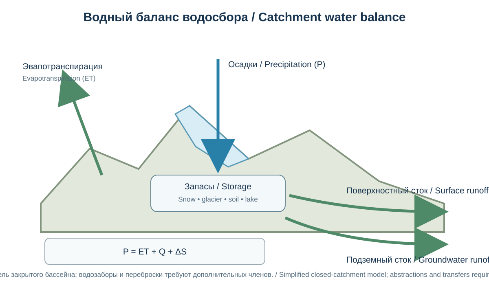
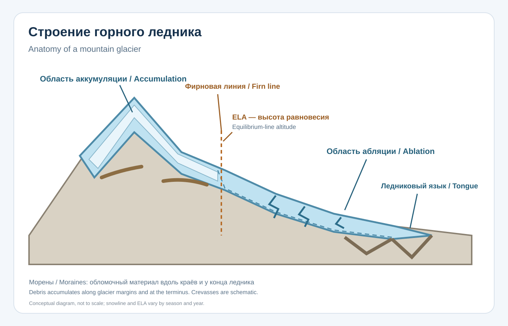
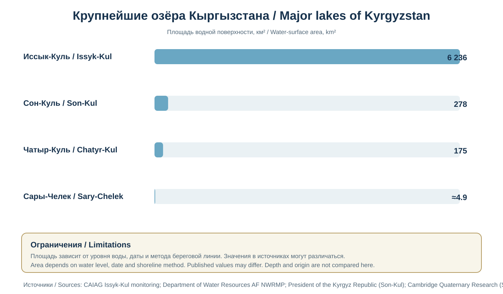
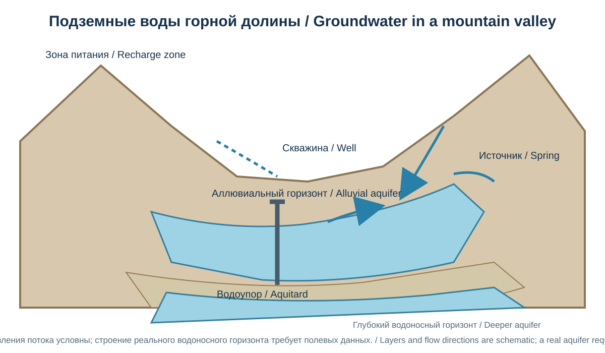
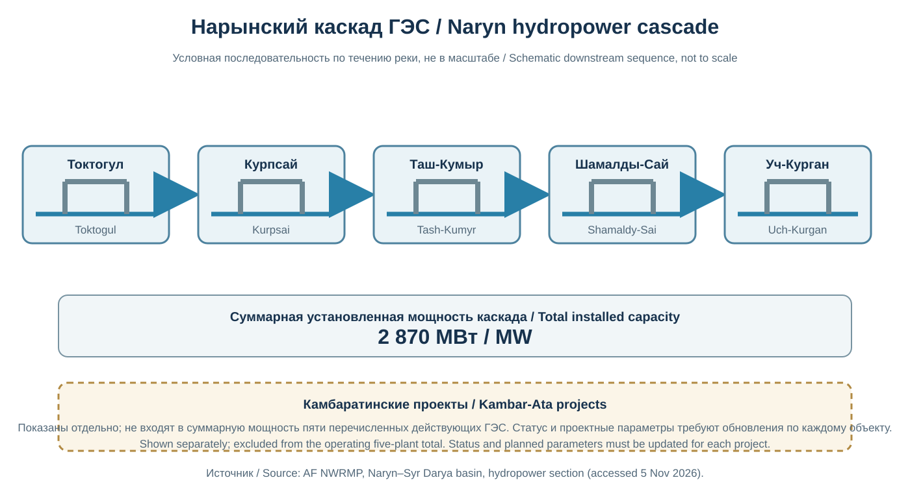
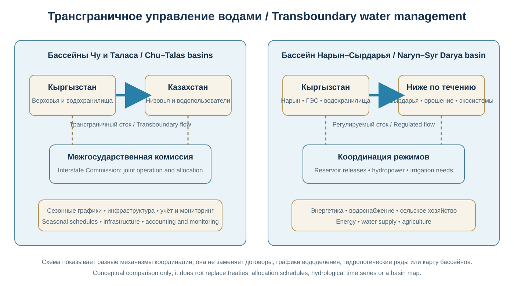
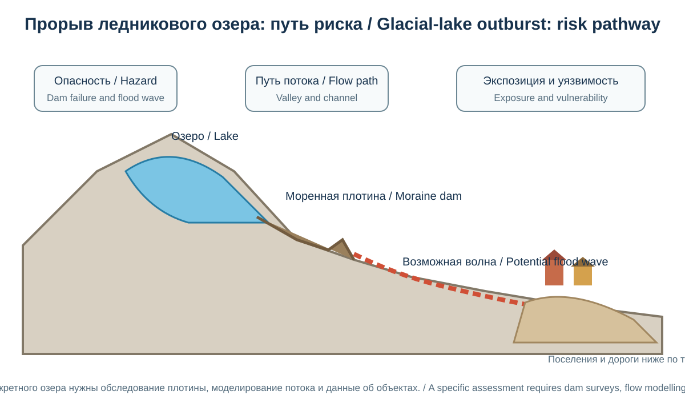
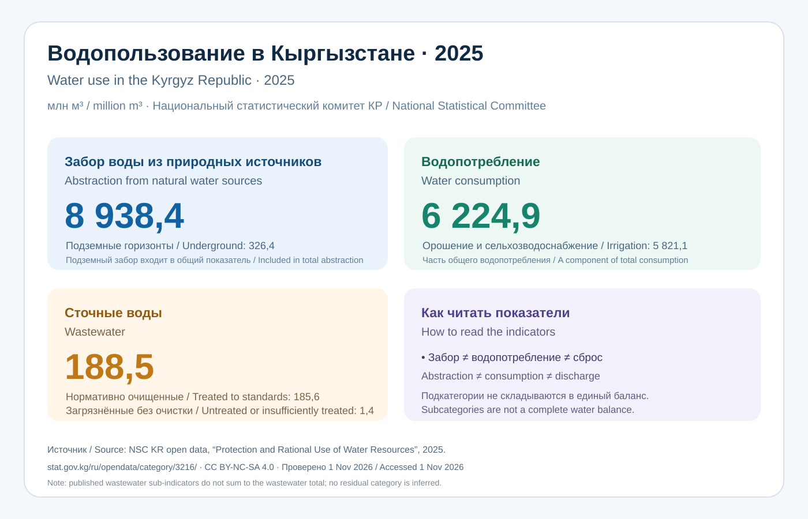

Глава 20. Ледники, реки, озёра и водные ресурсы Кыргызстана
Chapter 20. Glaciers, Rivers, Lakes and Water Resources of Kyrgyzstan
Часть IV. Кыргызстан — природная география / Part IV. Kyrgyzstan — Physical Geography
Научно-образовательный атлас / Scientific and Educational Atlas
Цели главыChapter objectives
Вода — один из важнейших природных ресурсов Кыргызстана и ключевой фактор его географии, экологии и экономики. Высокогорные снеговые и ледниковые области питают реки, которые пересекают государственные границы и обеспечивают водой сельское хозяйство, города, промышленность и энергетические системы Центральной Азии. Озёра, подземные воды, болота, родники и водохранилища дополняют сложную гидрологическую систему страны.
Глава рассматривает криосферу, речные бассейны, крупнейшие озёра и водохранилища, сезонность стока, водный баланс, трансграничное управление, качество воды и климатические изменения.
После изучения главы читатель сможет: - объяснять роль снега и ледников в формировании речного стока; - различать речной бассейн, водосбор, водораздел и гидрологический режим; - описывать основные речные бассейны Кыргызстана и их трансграничные связи; - сравнивать озёра тектонического, ледникового и завального происхождения; - анализировать назначение водохранилищ и ирригационных систем; - различать водные запасы, водные ресурсы и возобновляемый сток; - оценивать влияние изменения климата и хозяйственной деятельности на водную безопасность.
Water is one of Kyrgyzstan’s most important natural assets and a defining factor in its geography, ecology and economy. Snow and glaciers in the high mountains feed rivers that cross national borders and support agriculture, settlements, industry and energy systems. Lakes, groundwater, springs, wetlands and reservoirs form additional components of the country’s hydrological system.
20.1. Кыргызстан как горная водообразующая странаKyrgyzstan as a Mountain Water-Generating Country
Высокогорный рельеф определяет особое положение Кыргызстана в гидрологии Центральной Азии. Значительная часть речного стока формируется в горных районах, где осадки накапливаются в виде сезонного снега, фирна и ледникового льда. Затем вода поступает в реки во время снеготаяния, таяния ледников, дождей и подземного питания.
Кыргызстан часто характеризуют как одну из важнейших водообразующих территорий региона. Однако выражение «водная башня Центральной Азии» не означает, что вся вода страны доступна для использования внутри её границ или что её распределение не зависит от сезона. Значительная часть стока проходит через трансграничные бассейны, а доступность воды определяется временем года, инфраструктурой, качеством воды и договорённостями между государствами.
По данным национальных и региональных водохозяйственных материалов, средний многолетний речной сток, формирующийся на территории Кыргызстана, оценивается примерно в 44,5–51,9 км³ в год в зависимости от методики и периода. Для справки в региональном водном ежегоднике приводится оценка возобновляемых водных ресурсов около 46,5 км³ в год. Эти величины нельзя считать постоянным ежегодным объёмом: фактический сток меняется от года к году.
Kyrgyzstan's high-mountain relief gives the country a special position in the hydrology of Central Asia. A substantial share of river runoff is generated in mountain areas, where precipitation is stored as seasonal snow, firn and glacier ice. Water then enters rivers through snowmelt, glacier melt, rainfall and groundwater discharge.
Kyrgyzstan is often described as one of the region's important water-generating territories. However, the expression “water tower of Central Asia” does not mean that all water is available for use within the country's borders or that its distribution is independent of season. A significant share of runoff passes through transboundary basins, and water availability depends on the time of year, infrastructure, water quality and agreements among states.
National and regional water-management materials provide different estimates of the long-term average river runoff generated within Kyrgyzstan, approximately 44.5–51.9 km³ per year, depending on method and period. A regional water yearbook gives an estimate of about 46.5 km³ per year for renewable water resources. These values are not a fixed annual volume: actual runoff varies from year to year.
20.2. Водный баланс и основные понятияWater Balance and Key Concepts

Упрощённая модель закрытого бассейна; водозаборы, возвратные воды и переброски требуют дополнительных членов баланса.Simplified closed-catchment model; abstractions, return flows and transfers require additional balance terms.
Водный баланс описывает соотношение поступления, хранения и расходования воды на определённой территории за выбранный период.
Упрощённое уравнение водного баланса водосбора:
[ P = ET + Q + \Delta S ]
где: - (P) — атмосферные осадки; - (ET) — суммарное испарение и транспирация; - (Q) — сток за пределы рассматриваемого водосбора; - (\Delta S) — изменение запасов воды в снеге, ледниках, почве, озёрах и подземных горизонтах.
Для реального бассейна могут потребоваться дополнительные члены: межбассейновые переброски, водозабор, возвратные воды, искусственное регулирование и обмен с соседними подземными системами.
Водные запасы — вода, находящаяся в данный момент в ледниках, озёрах, водохранилищах, почве и подземных горизонтах.
Возобновляемые водные ресурсы — объём воды, который обновляется гидрологическим циклом за определённый период.
Речной сток — объём воды, проходящий через поперечное сечение реки за заданное время.
Водность — характеристика количества воды в реке за период; может выражаться расходом или объёмом стока.
Расход воды — объём воды, проходящий через сечение русла за единицу времени, обычно м³/с.
Модуль стока — расход воды, отнесённый к площади водосбора, обычно л/(с·км²).
Важно не складывать запасы льда и озёр с ежегодным речным стоком без ясного указания, что сравниваются разные физические величины. Объём ледникового льда — многолетний запас; речной сток — поток за единицу времени.
The water balance describes the relationship between water input, storage and output within a defined area and period.
A simplified water-balance equation for a catchment is:
P = ET + Q + ΔS
where: - P is precipitation; - ET is total evaporation and transpiration (evapotranspiration); - Q is runoff leaving the catchment; and - ΔS is the change in water storage in snow, glaciers, soil, lakes and groundwater.
A real basin may require additional terms for inter-basin transfers, water abstraction, return flows, artificial regulation and exchange with neighbouring groundwater systems.
Water storage is the amount of water held at a given time in glaciers, lakes, reservoirs, soil and groundwater.
Renewable water resources are the volume of water replenished by the hydrological cycle over a defined period.
River runoff is the volume of water passing through a river cross-section over a specified time.
River discharge is the rate of water flow through a channel cross-section, usually expressed in cubic metres per second (m³/s).
Runoff depth or specific discharge relates runoff to the area of a catchment; a common unit is litres per second per square kilometre (L/s/km²).
Do not add glacier or lake storage to annual river runoff without stating that different physical quantities are being compared. Glacier-ice volume is a multi-year stock; river runoff is a flow over time.
20.3. Ледники КыргызстанаGlaciers of Kyrgyzstan

Рисунок 20-I / Figure 20-I. Области аккумуляции и абляции, фирновая линия, ELA, язык, морены и трещиныAccumulation and ablation areas, firn line, ELA, tongue, moraines and crevasses.
20.3.1. Формирование и строение ледников
Ледник — многолетняя масса льда, образующаяся там, где накопление снега за длительный период компенсирует или превышает потери от таяния, испарения и механического выноса. Снег постепенно уплотняется, превращается в фирн, а затем в ледниковый лёд.
Ледник состоит из: - области питания (аккумуляции), где накапливается снег; - области абляции, где преобладают потери массы; - фирновой области, в которой снег преобразуется в лёд; - ледникового языка, если он выражен; - трещин, ледопадов, морен и приледниковых водоёмов.
Граница между аккумуляцией и абляцией в конце балансового года приближённо соответствует линии равновесия ледника (ELA). Её высота меняется от года к году и зависит от температуры, осадков, экспозиции, ветрового переноса снега и облачности.
20.3.2. Основные ледниковые районы
Наиболее значительные оледенения приурочены к высокогорным частям Тянь-Шаня и Памиро-Алая: - Центральный и Восточный Тянь-Шань, включая районы Какшаал-Тоо, Ак-Шыйрак и Сары-Джаз; - хребты Терскей Ала-Тоо и Кунгей Ала-Тоо; - Кыргызский хребет и его высокие узлы; - Алайский и Заалайский хребты; - высокогорные массивы Внутреннего Тянь-Шаня.
Распределение ледников определяется не только абсолютной высотой. Важны количество твёрдых осадков, экспозиция, форма ледникового бассейна, затенение, ветровое перераспределение снега и температура летнего сезона.
20.3.3. Типы ледников
| Тип | Характеристика | Типичная форма рельефа |
|---|---|---|
| Долинный | Движется по горной долине | Длинный ледниковый язык |
| Каровый | Заполняет чашеобразное углубление у истоков долины | Ледниковый кар |
| Висячий | Расположен на крутом склоне выше главной долины | Короткий ледяной массив |
| Сетчатый или сложный долинный | Несколько потоков льда объединяются в системе долин | Разветвлённая ледниковая сеть |
| Покровный или купольный | Лёд перекрывает значительную часть поверхности | Ледяной купол или плато |
20.3.4. Ледниковый баланс массы
Баланс массы — разность между накоплением и потерями льда за определённый период. Он выражается, например, в метрах водного эквивалента в год (м в.э./год).
Положительный баланс означает, что накопление превышает потери; отрицательный — что ледник теряет массу. Отрицательный баланс в отдельном году не означает немедленного исчезновения ледника, но повторяющиеся отрицательные значения ведут к сокращению его толщины и площади.
Исследование регионального баланса ледников Тянь-Шаня и Памира за 2000–2022 годы оценило среднюю потерю около −0,39 м водного эквивалента в год для рассмотренной совокупности ледников. Это региональная оценка, а не показатель каждого ледника Кыргызстана. Различия между массивами велики, а результаты зависят от метода и набора данных.
20.3.5. Ледниковое отступание и его последствия
Потепление воздуха изменяет соотношение накопления и таяния. Для ряда ледников наблюдаются сокращение площади, истончение и отступание концов. Но скорость изменений неодинакова: отдельные ледники могут временно демонстрировать сложную динамику из-за лавинного питания, затенения, рельефа и местных осадков.
Последствия включают: - изменение сезонного распределения речного стока; - образование и расширение приледниковых озёр; - изменение устойчивости моренных и ледниковых плотин; - повышение отдельных рисков прорыва ледниковых озёр; - сокращение долгосрочного запаса льда; - изменения экосистем и высокогорных ландшафтов.
Важно различать краткосрочный эффект усиленного таяния и долгосрочную устойчивость водоснабжения. На ранних стадиях ускоренного таяния сток некоторых рек может увеличиваться, но по мере истощения ледникового запаса вклад ледников в сухие сезоны может уменьшаться.
20.3.1 Glacier formation and structure
A glacier is a perennial mass of ice that forms where snow accumulation over a long period equals or exceeds losses through melting, evaporation and mechanical removal. Snow gradually compacts into firn and then into glacier ice.
A glacier may contain: - an accumulation area, where snow builds up; - an ablation area, where mass losses dominate; - a firn zone, where snow is transformed into ice; - a glacier tongue, where one is developed; - crevasses, icefalls, moraines and proglacial water bodies.
At the end of a mass-balance year, the boundary between accumulation and ablation approximately corresponds to the glacier equilibrium-line altitude (ELA). Its elevation changes from year to year and depends on temperature, precipitation, slope aspect, wind redistribution of snow and cloudiness.
20.3.2 Main glacier regions
The largest glacier concentrations are associated with the high-mountain areas of the Tien Shan and Pamir-Alay: - the Central and Eastern Tien Shan, including the Kakshaal-Too, Ak-Shyyrak and Sary-Jaz areas; - the Terskey Ala-Too and Kungey Ala-Too ranges; - the Kyrgyz Range and its high mountain massifs; - the Alay and Trans-Alay ranges; and - high-mountain massifs of the Inner Tien Shan.
Glacier distribution is determined not only by absolute elevation. The amount of solid precipitation, slope aspect, glacier-basin geometry, shading, wind redistribution of snow and summer temperature are also important.
20.3.3 Glacier types
| Type | Characteristics | Typical landform |
|---|---|---|
| Valley glacier | Flows along a mountain valley | Long glacier tongue |
| Cirque glacier | Occupies a bowl-shaped hollow near a valley head | Glacial cirque |
| Hanging glacier | Lies on a steep slope above a main valley | Short ice mass |
| Compound or network glacier | Several ice streams join within a valley system | Branched glacier network |
| Ice cap or dome | Ice covers a substantial area of the surface | Ice dome or plateau |
20.3.4 Glacier mass balance
Mass balance is the difference between accumulation and ice loss over a specified period. It is often expressed in metres of water equivalent per year (m w.e./yr).
A positive balance means accumulation exceeds losses; a negative balance means the glacier loses mass. A negative balance in one year does not mean that a glacier will disappear immediately, but repeated negative values lead to a reduction in its thickness and area.
A study of regional glacier mass balance in the Tien Shan and Pamir for 2000–2022 estimated an average loss of about −0.39 m water equivalent per year for the glaciers included in the analysis. This is a regional estimate, not a value for every glacier in Kyrgyzstan. Differences among massifs are substantial, and results depend on the method and dataset.
20.3.5 Glacier retreat and its consequences
Air-temperature warming changes the balance between accumulation and melt. Many glaciers show area reduction, thinning and retreat of their termini. The rate of change is not uniform: individual glaciers may show complex behaviour because of avalanche nourishment, shading, relief and local precipitation.
Consequences include: - changes in the seasonal distribution of river runoff; - formation and expansion of proglacial lakes; - changes in the stability of moraine and ice dams; - increased risk of some glacial-lake outburst floods; - reduction of long-term ice storage; and - changes in ecosystems and high-mountain landscapes.
It is important to distinguish the short-term effect of accelerated melting from the long-term sustainability of water supply. During early stages of accelerated melt, runoff in some rivers may increase; as glacier storage is depleted, the contribution of glaciers during dry seasons may decline.
20.4. Реки и речные бассейны КыргызстанаRivers and River Basins of Kyrgyzstan
20.4.1. Речная сеть
Реки Кыргызстана отличаются горным характером: значительными уклонами, быстрым течением в верховьях, глубокими долинами, порогами и водопадами. В верхних частях бассейнов важную роль играют снеговое и ледниковое питание; в предгорьях и долинах возрастает значение дождевого и подземного питания.
В национальных источниках встречаются разные оценки количества рек и водотоков — от нескольких тысяч до десятков тысяч, если учитывать малые временные водотоки. Для атласа предпочтительно указывать критерий подсчёта: длину водотока, постоянство течения и используемый картографический масштаб.
20.4.2. Главные направления стока
Водные потоки Кыргызстана относятся к нескольким крупным бассейновым системам: 1. бассейн Сырдарьи — прежде всего через Нарын и Карадарью; 2. бассейн Чу; 3. бассейн Таласа; 4. бассейн Или и Балхаша; 5. бассейн Тарима; 6. внутренний бессточный бассейн Иссык-Куля.
В отдельных официальных и исследовательских материалах число бассейновых единиц отличается, поскольку применяются разные уровни иерархии и способы группировки. В атласе следует показывать основные гидрографические направления и отдельно отмечать суббассейны.
20.4.3. Река Нарын
Нарын — крупнейшая река Кыргызстана по значению для национальной гидрографии и гидроэнергетики. Она формируется в высокогорных районах Внутреннего Тянь-Шаня в результате слияния крупных истоков, в том числе Большого и Малого Нарына. Далее река течёт на запад и юго-запад, пересекает глубокие горные долины и выходит к Ферганской долине, где соединяется с Карадарьёй, образуя Сырдарью.
Нарын имеет преимущественно снеговое и ледниково-снеговое питание с существенными сезонными колебаниями. Водный режим зависит от высотного распределения осадков, температуры, таяния снега и ледников, а также от регулирования водохранилищами.
20.4.4. Карадарья и бассейн Сырдарьи
Карадарья формируется в восточной части Ферганского региона и получает питание от рек горных склонов Алайского и Ферганского направлений. После слияния Нарына и Карадарьи начинается Сырдарья — одна из главных рек Центральной Азии и исторически важнейшая водная артерия орошаемых земель региона.
Водный режим бассейна связан с трансграничным водопользованием, водохранилищами, ирригационными каналами и возвратными водами. Поэтому географическое описание реки должно учитывать не только природный сток, но и антропогенную трансформацию.
20.4.5. Река Чу
Чу берёт начало в горных районах северного Кыргызстана и течёт через Чуйскую долину, далее направляясь к Казахстану. В верховьях и притоках существенную роль играют снеговое и ледниково-снеговое питание, а ниже по течению сток заметно зависит от водозабора и ирригационного регулирования.
Река имеет большое значение для водоснабжения и орошения Чуйской долины. Водохозяйственное управление требует координации между Кыргызстаном и Казахстаном.
20.4.6. Река Талас
Талас формируется в результате слияния горных рек, питаемых склонами Таласского Ала-Тоо и прилегающих хребтов. Он пересекает Таласскую долину и далее направляется в Казахстан, где его сток постепенно теряется в засушливых районах и водохозяйственных системах.
Талас имеет важное значение для орошения и регионального водоснабжения. Кировское водохранилище играет регулирующую роль в бассейне.
20.4.7. Сары-Джаз и реки восточного Тянь-Шаня
Сары-Джаз — одна из крупнейших рек восточной части страны. Его бассейн расположен в высокогорном районе, где велико значение снегового и ледникового питания. Река направляется к территории Китая и относится к системе Тарима. Её водный режим зависит от состояния высокогорной криосферы и летнего таяния.
20.4.8. Чаткал и реки юго-запада
Чаткал формируется в горной системе Западного Тянь-Шаня и далее связан с бассейном Сырдарьи. Реки юго-запада Кыргызстана, включая притоки Карадарьи, имеют важное значение для орошения, водоснабжения и гидроэнергетики. Их режим зависит от сочетания снегового, ледникового, дождевого и подземного питания.
20.4.1 River network
The rivers of Kyrgyzstan have a mountain character: steep gradients, fast flow in their upper reaches, deep valleys, rapids and waterfalls. Snowmelt and glacier melt are important in the upper catchments; rainfall and groundwater become more significant in foothills and valleys.
National sources give different estimates of the number of rivers and watercourses, ranging from several thousand to tens of thousands when small temporary streams are included. An atlas should state the counting criterion: watercourse length, permanence of flow and the cartographic scale used.
20.4.2 Main drainage directions
The rivers of Kyrgyzstan belong to several major basin systems: 1. the Syr Darya basin, mainly through the Naryn and Kara Darya; 2. the Chu basin; 3. the Talas basin; 4. the Ili–Balkhash basin; 5. the Tarim basin; and 6. the internal, endorheic Issyk-Kul basin.
Official and research sources may give different numbers of basin units because they use different levels of hierarchy and grouping methods. An atlas should show the main drainage directions and identify sub-basins separately.
20.4.3 The Naryn River
The Naryn is one of the most important rivers in Kyrgyzstan for national hydrography and hydropower. It forms in the high-mountain areas of the Inner Tien Shan through the joining of major headwater streams, including the Big Naryn and Small Naryn. It then flows west and south-west through deep mountain valleys towards the Fergana Valley, where it joins the Kara Darya to form the Syr Darya.
The Naryn is mainly snow-fed and glacier-snow-fed, with substantial seasonal variation. Its regime depends on the elevation distribution of precipitation, temperature, snow and glacier melt, and reservoir regulation.
20.4.4 The Kara Darya and the Syr Darya basin
The Kara Darya forms in the eastern part of the Fergana region and is fed by rivers draining the Alay and Fergana mountain slopes. After the Naryn and Kara Darya join, the Syr Darya begins. It is one of the major rivers of Central Asia and has historically been a vital waterway for irrigated lands in the region.
The basin's water regime is linked to transboundary water use, reservoirs, irrigation canals and return flows. A geographic description must therefore consider not only natural runoff but also human modification of the river system.
20.4.5 The Chu River
The Chu rises in the mountain areas of northern Kyrgyzstan and flows through the Chu Valley before continuing towards Kazakhstan. Snow and glacier-snow melt are important in its upper reaches and tributaries; farther downstream, discharge is strongly affected by water abstraction and irrigation regulation.
The river is important for water supply and irrigation in the Chu Valley. Water management requires coordination between Kyrgyzstan and Kazakhstan.
20.4.6 The Talas River
The Talas forms through the joining of mountain rivers fed by the slopes of the Talas Ala-Too and adjacent ranges. It crosses the Talas Valley and then flows into Kazakhstan, where its water is gradually lost in arid areas and water-management systems.
The river is important for irrigation and regional water supply. The Kirov Reservoir plays a regulating role in the basin.
20.4.7 Sary-Jaz and rivers of the Eastern Tien Shan
The Sary-Jaz is one of the largest rivers in the eastern part of the country. Its catchment lies in a high-mountain region where snow and glacier melt are important. The river flows towards China and belongs to the Tarim system. Its regime depends on the condition of the high-mountain cryosphere and summer melt.
20.4.8 Chatkal and rivers of the south-west
The Chatkal forms in the Western Tien Shan and is connected downstream with the Syr Darya basin. Rivers in south-western Kyrgyzstan, including tributaries of the Kara Darya, are important for irrigation, water supply and hydropower. Their regimes reflect a combination of snowmelt, glacier melt, rainfall and groundwater.
20.5. Питание рек и сезонный режим стокаRiver Regimes and Sources of Flow
Горные реки получают воду из нескольких источников: - снеговое питание — таяние сезонного снежного покрова; - ледниковое питание — таяние многолетнего льда; - дождевое питание — прямое поступление атмосферных осадков; - подземное питание — выход грунтовых и трещинных вод.
Большинство крупных горных бассейнов имеет смешанное питание. Доля каждого источника меняется по высоте, сезону и конкретному бассейну.
Для многих рек характерно повышение водности в тёплую часть года, когда тает снег и усиливается абляция ледников. Но сроки и амплитуда половодья неодинаковы. В бассейнах с преобладанием низко- и среднегорного снегового питания пик стока может наступать раньше, чем в высокогорных ледниковых системах.
20.5.1. Основные гидрологические фазы
| Фаза | Характеристика | Основные процессы |
|---|---|---|
| Зимняя межень | Во многих реках минимальный сток | Снег удерживает воду; часть питания поступает из подземных источников |
| Весеннее повышение | Рост расхода воды | Таяние снега на низких и средних высотах, весенние дожди |
| Летнее половодье или паводочный период | Часто высокие расходы в горных реках | Таяние высокогорного снега и ледников, ливни |
| Осеннее снижение | Постепенное уменьшение стока | Охлаждение, прекращение интенсивного таяния, снижение осадков в отдельных районах |
Термины «половодье» и «паводок» не взаимозаменяемы. Половодье — относительно регулярная сезонная фаза повышения водности; паводок — кратковременный подъём уровня и расхода воды, часто вызванный дождём или интенсивным таянием.
Mountain rivers receive water from several sources: - snowmelt: melting of seasonal snow cover; - glacier melt: melting of multi-year ice; - rainfall: direct input of precipitation; and - groundwater: discharge from groundwater and fractured-rock systems.
Most large mountain catchments have mixed sources of flow. The contribution of each source changes with elevation, season and catchment characteristics.
Many rivers experience higher discharge during the warm part of the year, when snow melts and glacier ablation increases. However, the timing and magnitude of high flow differ. In catchments dominated by low- and middle-elevation snowmelt, peak discharge may occur earlier than in high-mountain glacier-fed systems.
20.5.1 Main hydrological phases
| Phase | Characteristics | Main processes |
|---|---|---|
| Winter low flow | Minimum discharge in many rivers | Water is stored as snow; groundwater provides part of the flow |
| Spring rise | Increasing discharge | Snowmelt at low and middle elevations, spring rainfall |
| Summer high water or flood period | Often high discharge in mountain rivers | Melt of high-mountain snow and glaciers, intense rainfall |
| Autumn recession | Gradual decrease in discharge | Cooling, reduced melt and, in some areas, lower precipitation |
The terms seasonal high water and flood event are not interchangeable. Seasonal high water is a relatively regular phase of increased flow; a flood event is a short-term rise in water level and discharge, often caused by rainfall or rapid melting.
20.5.2. Как читать сезонный гидрограф горной рекиReading the Seasonal Hydrograph of a Mountain River
Гидрограф — график изменения расхода воды в реке во времени. Для горных рек Кыргызстана он помогает понять, когда формируется основной сток, насколько важны снеговое и ледниковое питание и в какой сезон могут возникать периоды повышенной водности или дефицита воды.
Типичные элементы годового режима:
- Зимняя межень. В холодный период значительная часть осадков накапливается в виде снега, а поверхностный сток часто уменьшается. Подземное питание может поддерживать течение, но его доля различается между бассейнами.
- Весенний подъём. Потепление вызывает таяние снега на низких и средних высотах. Срок начала подъёма зависит от высоты бассейна, экспозиции склонов, температуры и осадков.
- Летний максимум. В бассейнах с существенным высокогорным снеговым и ледниковым питанием расход может оставаться высоким или возрастать в тёплые месяцы. В других реках максимум наступает раньше, во время интенсивного снеготаяния.
- Осенний спад. По мере охлаждения и уменьшения таяния расход обычно снижается, хотя осенние дожди и особенности подземного питания могут менять форму гидрографа.
Это не универсальная схема для каждой реки. Высота и площадь бассейна, доля оледенения, экспозиция, геология, водохранилища, водозабор и межгодовые погодные различия могут существенно менять режим.
Как отличать источники питания. Снеговое питание часто проявляется выраженным сезонным подъёмом после весеннего потепления. Ледниковое питание может поддерживать летний сток в периоды интенсивного таяния. Дождевое питание вызывает более быстрые реакции на осадки, особенно в небольших крутых водосборах. Подземное питание способно сглаживать колебания, поддерживая расход в периоды малых осадков. На практике эти компоненты действуют одновременно, поэтому один пик на графике не доказывает единственный источник воды.
Что нужно проверить перед интерпретацией: 1. Представляет ли график среднесуточные, среднемесячные или мгновенные значения расхода. 2. Где расположен гидропост и какова площадь водосбора выше него. 3. Были ли в рассматриваемый период изменения водозабора, режима водохранилища или русла. 4. Есть ли пропуски наблюдений и насколько длинен ряд. 5. Сопоставимы ли годы по температуре, осадкам и снежным запасам.
Учебное задание. Возьмите многолетний ряд среднемесячного расхода одной реки. Постройте график по месяцам для нескольких лет, найдите месяц среднего максимума и минимума, а затем сравните годы с ранней и поздней весной. Не называйте причину различий установленной, пока не проверите температурные, осадочные и эксплуатационные данные.
A hydrograph is a graph showing how river discharge changes over time. For Kyrgyzstan’s mountain rivers, it helps identify when most flow is generated and how snowmelt, glacier melt and other sources contribute to seasonal discharge.
Typical elements of an annual regime include:
- Winter low flow. During the cold season, much precipitation is stored as snow and surface runoff often decreases. Groundwater may sustain river flow, although its contribution varies among catchments.
- Spring rise. Warming melts snow at lower and middle elevations. The timing depends on catchment elevation, slope aspect, temperature and precipitation.
- Summer high flow. In catchments with substantial high-altitude snow and glacier contributions, discharge may remain high or increase during warm months. Other rivers reach their peak earlier, during intense seasonal snowmelt.
- Autumn recession. As temperatures fall and melt decreases, discharge usually declines, although autumn rainfall and groundwater contributions can alter the hydrograph.
This is not a universal pattern for every river. Catchment elevation and area, glacier coverage, aspect, geology, reservoirs, water abstraction and year-to-year weather variability can substantially change the regime.
Distinguishing flow sources. Snowmelt often produces a seasonal rise after spring warming. Glacier melt can sustain summer flow during periods of intense ablation. Rainfall produces a faster response to precipitation, especially in small, steep catchments. Groundwater can smooth fluctuations and sustain flow during dry periods. In reality, these sources operate together, so a single peak does not prove that only one source controls the river.
Checks before interpreting a hydrograph: 1. Does the graph show instantaneous, daily mean or monthly mean discharge? 2. Where is the gauging station, and what is the upstream catchment area? 3. Did water abstraction, reservoir operation or channel conditions change during the period? 4. Are there gaps in the observations, and how long is the record? 5. Are the compared years similar in temperature, precipitation and snow storage?
Learning activity. Obtain a multi-year series of monthly mean discharge for one river. Plot the monthly values for several years, identify the average maximum and minimum months, and compare years with early and late springs. Do not treat a proposed explanation as established until temperature, precipitation and operational data have been checked.
20.6. Озёра КыргызстанаLakes of Kyrgyzstan

Сравнение опубликованных площадей, а не карта озёр. Глубины и происхождение не приведены: источники требуют дополнительного согласования по дате и методике.Published surface areas are compared, not mapped. Depth and origin are omitted pending reconciliation of source dates and methods.
В Кыргызстане представлены озёра тектонического, ледникового, завального, карстового и смешанного происхождения. Они различаются по глубине, минерализации, площади, высоте расположения и степени связи с речной сетью.
20.6.1. Иссык-Куль
Иссык-Куль — крупнейшее озеро Кыргызстана и одно из крупнейших высокогорных озёр мира. Оно расположено в межгорной тектонической котловине между хребтами Кунгей Ала-Тоо и Терскей Ала-Тоо.
Основные характеристики: - высота поверхности — около 1 609 м над уровнем моря по данным Национального плана управления водными ресурсами; уровень колеблется; - площадь зеркала — около 6 280 км² по данным Национального плана управления водными ресурсами; она меняется вместе с уровнем воды; - длина — около 177 км; - максимальная ширина — около 60 км; - максимальная глубина — около 668 м; - вода солоноватая; озеро бессточное, естественного поверхностного стока не имеет.
В озеро впадает множество рек и ручьёв, наиболее известные — Тюп, Джергалан, Каракол, Жууку, Барскоон и другие. Подземный водообмен также может иметь значение для баланса озера. Отсутствие поверхностного стока способствует накоплению растворённых веществ.
Уровень Иссык-Куля менялся в историческое и современное время под влиянием климатических условий, притока рек, испарения и водозабора. При описании динамики необходимо указывать конкретный период наблюдений.
20.6.2. Сон-Куль
Сон-Куль — высокогорное пресноводное озеро в Нарынской области, расположенное в межгорной котловине на высоте около 3 016 м. Оно имеет важное значение для высокогорных пастбищ, сезонного животноводства, водоплавающих птиц и природного туризма.
Озеро мелководнее Иссык-Куля, его уровень и площадь подвержены сезонным и многолетним колебаниям. Берега и прилегающие заболоченные участки формируют ценные местообитания. Хозяйственное использование необходимо согласовывать с охраной водно-болотных экосистем.
20.6.3. Чатыр-Куль
Чатыр-Куль расположен в высокогорной котловине у китайской границы, на высоте около 3 530 м. Это бессточное озеро с холодным климатом и значительными сезонными колебаниями условий. Оно имеет важное значение для водоплавающих птиц и охраняемых высокогорных экосистем.
20.6.4. Сары-Челек
Сары-Челек — глубокое горное озеро Западного Тянь-Шаня, сформировавшееся в результате природного запруживания долины. Оно входит в территорию биосферного заповедника Сары-Челек и окружено лесными и горными экосистемами. Озеро и его окрестности имеют исключительную природоохранную и научную ценность.
20.6.5. Мерцбахера и высокогорные ледниковые озёра
Озеро Мерцбахера находится в районе ледников Иныльчек в Центральном Тянь-Шане. Оно известно периодическими прорывными сбросами воды, когда накопившаяся вода выходит из подпрудного ледникового озера. Это природное явление представляет интерес для гляциологии и мониторинга опасных процессов.
Помимо крупных озёр, в высокогорье распространены малые каровые, моренные и ледниково-подпрудные водоёмы. Их число, площадь и устойчивость меняются по мере отступания ледников и перестройки моренных комплексов.
20.6.6. Сравнение основных озёр
| Озеро | Происхождение / тип | Высота (ориентировочно) | Особенности |
|---|---|---|---|
| Иссык-Куль | Тектоническое | около 1 609 м | Крупное глубокое бессточное солоноватое озеро |
| Сон-Куль | Межгорное, тектоническое и ледниково-геоморфологическое влияние котловины | 3 016 м | Высокогорное пресноводное озеро, пастбища и водно-болотные местообитания |
| Чатыр-Куль | Межгорное бессточное | 3 530 м | Холодное высокогорное озеро у границы с Китаем |
| Сары-Челек | Завальное | Около 1 873 м | Глубокое озеро в Западном Тянь-Шане |
| Мерцбахера | Ледниково-подпрудное | Высокогорье Иныльчека | Периодические прорывные сбросы |
Высоты и морфометрические характеристики озёр могут различаться в справочниках из-за колебаний уровня, времени измерения и используемой системы высот. Перед выпуском картографических материалов значения следует привязать к конкретному источнику и дате.
Kyrgyzstan contains lakes of tectonic, glacial, landslide-dammed, karst and mixed origin. They differ in depth, mineralisation, surface area, elevation and degree of connection to the river network.
20.6.1 Issyk-Kul
Issyk-Kul is the largest lake in Kyrgyzstan and one of the world's largest high-mountain lakes. It lies in an intermontane tectonic basin between the Kungey Ala-Too and Terskey Ala-Too ranges.
Key characteristics include: - surface elevation of about 1,609 m above sea level, according to the National Water Resources Management Plan; the level fluctuates; - surface area of about 6,280 km² according to the same plan; area changes with lake level; - length of about 177 km; - maximum width of about 60 km; - maximum depth of about 668 m; and - brackish water; the lake is endorheic and has no natural surface outlet.
Many rivers and streams flow into the lake, including the Tyup, Jergalan, Karakol, Juu-Ku and Barskoon. Groundwater exchange may also contribute to the lake's water balance. The absence of a surface outlet promotes the accumulation of dissolved substances.
The level of Issyk-Kul has changed in historical and modern times under the influence of climate, river inflow, evaporation and water abstraction. Any description of its dynamics should state the observation period.
20.6.2 Song-Kul
Song-Kul is a high-mountain freshwater lake in Naryn Region, located in an intermontane basin at about 3,016 m. It is important for high-mountain pastures, seasonal livestock farming, waterbirds and nature tourism.
The lake is shallower than Issyk-Kul, and its level and area vary seasonally and over longer periods. Its shores and adjacent wetlands provide valuable habitats. Economic use should be coordinated with the conservation of wetland ecosystems.
20.6.3 Chatyr-Kul
Chatyr-Kul lies in a high-mountain basin near the Chinese border at an elevation of about 3,530 m. It is an endorheic lake in a cold climate, with substantial seasonal changes in conditions. It is important for waterbirds and protected high-mountain ecosystems.
20.6.4 Sary-Chelek
Sary-Chelek is a deep mountain lake in the Western Tien Shan, formed by natural damming of a valley. It lies within the Sary-Chelek Biosphere Reserve and is surrounded by forest and mountain ecosystems. The lake and its surroundings have exceptional conservation and scientific value.
20.6.5 Merzbacher Lake and high-mountain glacial lakes
Merzbacher Lake is located in the Inylchek glacier area of the Central Tien Shan. It is known for periodic outburst events, when water accumulated in the ice-dammed lake is released. This natural phenomenon is important for glaciology and hazard monitoring.
In addition to large lakes, high-mountain areas contain small cirque, moraine-dammed and glacier-dammed water bodies. Their number, area and stability change as glaciers retreat and moraine complexes are reorganised.
20.6.6 Comparison of major lakes
| Lake | Origin / type | Approximate elevation | Main characteristics |
|---|---|---|---|
| Issyk-Kul | Tectonic | about 1,609 m | Large, deep, endorheic, brackish lake |
| Song-Kul | Intermontane; tectonic and glacial-geomorphic influence | 3,016 m | High-mountain freshwater lake, pastures and wetland habitats |
| Chatyr-Kul | Intermontane, endorheic | 3,530 m | Cold high-mountain lake near the Chinese border |
| Sary-Chelek | Landslide-dammed | about 1,873 m | Deep lake in the Western Tien Shan |
| Merzbacher | Glacier-dammed | High-mountain Inylchek area | Periodic outburst events |
Lake elevations and morphometric characteristics may differ among reference sources because of water-level fluctuations, measurement dates and vertical reference systems. Before publication, values on maps should be tied to a specific source and date.
20.6.7. Современная динамика малых ледниковых озёрRecent Dynamics of Small Glacial Lakes
Национальная инвентаризация ледниковых озёр Кыргызстана, представленная на Генеральной ассамблее EGU в 2025 году, основана на летних снимках Sentinel-2 за 2022–2024 годы. Авторы сообщают о выявлении более 2 000 озёр по территории страны; наибольшая концентрация отмечена в районе Терскей Ала-Тоо (1 137 объектов) и Кыргызского хребта (323 объекта). В работе описаны ограничения автоматизированного выделения водоёмов: тени, облачность, остаточный снег, сезонные водные понижения и мутность воды. Авторы подчёркивают необходимость ручной проверки контуров и регулярного обновления инвентаризации.
Эти цифры следует цитировать как результат конкретной исследовательской инвентаризации 2022–2024 годов, представленной в виде конференционного материала, а не как окончательное государственное число озёр или неизменный текущий реестр. Для карт необходимо указывать минимальный размер обнаруживаемого водоёма, даты снимков, сезон, правила классификации и результаты полевой проверки. Публичная запись исследования не означает автоматически, что полный векторный набор доступен для свободного повторного использования.
В более поздней работе тех же исследовательских направлений — препринте Piroton, Emmer и Havenith (2026), опубликованном 27 марта 2026 года, — представлен инвентарь на основе снимков Sentinel-2 с пространственным разрешением 10 м. Для 2024 года авторы выделили 2 592 озера общей площадью 77,6 км². Сопоставление с реконструкцией 2016–2017 годов показывает увеличение числа объектов на 10,5%, а суммарной площади — на 8,7%. Это более детализированная версия исследовательского набора, но публикация на EGUsphere обозначена как препринт, а не как окончательная рецензируемая статья. Поэтому значение 2 592 нельзя без оговорок подставлять вместо результата конференционного материала 2025 года: перед сравнением нужно проверить единые критерии минимальной площади, даты снимков, правила выделения и статус ручной проверки.
Исследование в журнале Natural Hazards and Earth System Sciences (2026) показывает, что в Кыргызском хребте количество ледниковых озёр увеличилось с 274 в 1968 году до 412 в 2021 году, а суммарная площадь — с 0,80 до 1,42 км² (+76%). При этом ледниковая площадь в пределах исследованного хребта сократилась с 378,5 до 262,0 км² (−31%). Динамика не сводится к простому расширению одних и тех же озёр: за период многие водоёмы исчезли, а новые возникли на деградирующих моренных комплексах и участках погребённого льда. Поэтому количество озёр может расти одновременно с сокращением площади ледников.
Результаты относятся именно к Кыргызскому хребту и периоду 1968–2021 годов; их нельзя напрямую переносить на весь Тянь-Шань или Кыргызстан. Они показывают также, что риск прорывных паводков требует оценки не только площади озера, но и типа подпруды, состояния морены/погребённого льда, геометрии стока, возможного пути волны и расположенных ниже объектов. Наличие озера само по себе не означает высокий риск GLOF.
A national inventory of glacial lakes in Kyrgyzstan presented at the 2025 EGU General Assembly used summer Sentinel-2 imagery from 2022–2024. The authors report more than 2,000 lakes countrywide, with the highest concentration in the Terskey Ala-Too (1,137 features) and Kyrgyz Range (323). The study describes limitations of automated water-body mapping, including shadows, clouds, residual snow, seasonal water-filled depressions and turbidity. Manual review and regular updates are identified as essential.
These figures should be cited as the result of a specific 2022–2024 research inventory presented as a conference contribution, not as a final government count or a permanently current register. Maps should state the minimum detectable lake size, image dates and season, classification rules and field-validation status. A public research record does not automatically mean that the complete vector dataset is openly reusable.
A later study by Piroton, Emmer and Havenith (2026), posted as a preprint on 27 March 2026, presents a 10 m Sentinel-2 inventory. For 2024, the authors mapped 2,592 lakes covering 77.6 km². Comparison with a reconstructed 2016–2017 inventory indicates an increase of 10.5% in lake count and 8.7% in total area. This is a more detailed research dataset, but the EGUsphere record identifies it as a preprint rather than a final peer-reviewed article. The figure of 2,592 should therefore not be substituted uncritically for the result reported in the 2025 conference contribution: comparable minimum-area thresholds, image dates, delineation rules and manual-review status must first be checked.
A 2026 study in Natural Hazards and Earth System Sciences found that the number of glacial lakes in the Kyrgyz Range increased from 274 in 1968 to 412 in 2021, while their total area grew from 0.80 to 1.42 km² (+76%). Over the same period, glacier area in the studied range declined from 378.5 to 262.0 km² (−31%). This was not simply the expansion of the same lakes: many disappeared while new lakes formed on degrading moraine complexes and areas of buried ice. Lake numbers can therefore rise even as glacier area declines.
These results apply to the Kyrgyz Range and the 1968–2021 study period; they must not be extrapolated directly to the entire Tien Shan or Kyrgyzstan. They also show why outburst-flood risk assessment must consider more than lake area: dam type and condition, moraine and buried-ice stability, drainage geometry, potential flow paths and downstream exposure all matter. The presence of a lake alone does not establish a high GLOF risk.

Рисунок 1 из Daiyrov et al. (2022): карта исследуемой территории и распределение ледниковых озёр в 2019 году. Охват ограничен Кыргызским и Терскейским хребтами; это не инвентаризация всех озёр Кыргызстана. Воспроизведено по лицензии CC BY 4.0. / Figure 1 from Daiyrov et al. (2022): study area and glacial-lake distribution in 2019.Coverage is limited to the Kyrgyz and Teskey ranges; it is not an inventory of all lakes in Kyrgyzstan. Reproduced under CC BY 4.0. Source: Daiyrov, M., Kattel, D.B., Narama, C. & Wang, W. (2022), Frontiers in Earth Science 10:850146, https://doi.org/10.3389/feart.2022.850146.
20.7. Подземные воды и источникиGroundwater and Springs

Оригинальная двуязычная концептуальная схема; реальные геологические слои и направления потока должны подтверждаться полевыми данными.Original bilingual conceptual diagram; actual geological layers and flow directions require field evidence.
Подземные воды формируются при просачивании осадков, речной и озёрной воды в породы и рыхлые отложения. В Кыргызстане выделяются: - аллювиальные водоносные горизонты речных долин; - межпластовые воды осадочных бассейнов; - трещинные воды горных пород; - карстовые воды; - минеральные и термальные воды.
Подземные воды важны для питьевого водоснабжения, сельского хозяйства и поддержания базисного стока рек. Родники особенно значимы в горных поселениях, где централизованная инфраструктура ограничена.
Качество подземной воды зависит от геологического строения, глубины, времени контакта с породами, природного химического состава и антропогенной нагрузки. Наличие прозрачной воды не гарантирует её микробиологическую и химическую безопасность. Для питьевого использования необходимы лабораторные анализы и санитарная защита источника.
Groundwater forms when precipitation, river water and lake water infiltrate rocks and unconsolidated deposits. Main types in Kyrgyzstan include: - alluvial aquifers in river valleys; - interlayer groundwater in sedimentary basins; - groundwater in fractures in mountain rocks; - karst groundwater; and - mineral and thermal waters.
Groundwater is important for drinking-water supply, agriculture and the maintenance of river baseflow. Springs are especially important in mountain settlements where centralised infrastructure is limited.
Groundwater quality depends on geological structure, depth, contact time with rocks, natural chemical composition and human pressures. Clear-looking water is not necessarily safe microbiologically or chemically. Laboratory testing and sanitary protection of the source are required before water is used for drinking.
20.8. Водохранилища и ирригационные системыReservoirs and Irrigation Systems

Условная последовательность пяти ГЭС по течению Нарына; суммарная установленная мощность 2 870 МВт по AF NWRMP. Камбаратинские проекты показаны отдельно и не включены в этот итог.Schematic downstream sequence of five Naryn plants; total installed capacity 2,870 MW per AF NWRMP. Kambar-Ata projects are separate and excluded from this total.
Водохранилища регулируют сезонный сток, обеспечивают орошение, водоснабжение и выработку электроэнергии. Они изменяют естественный гидрограф реки, задерживают наносы, влияют на температуру воды и экологические условия ниже плотины.
20.8.1. Токтогульское водохранилище
Токтогульское водохранилище на реке Нарын — крупнейший элемент гидроэнергетического регулирования страны. Оно связано с работой Токтогульской ГЭС и каскада гидроэлектростанций Нарына. Водохранилище имеет стратегическое значение для электроэнергетики Кыргызстана и регионального водного режима.
Эксплуатация требует баланса между выработкой электроэнергии, сезонным накоплением и сбросом воды, потребностями орошения нижнего течения и безопасностью гидротехнических сооружений.
20.8.2. Другие крупные водохранилища
К значимым объектам относятся: - Курпсайское и Уч-Курганское водохранилища в системе Нарына; - Орто-Токойское водохранилище на Чу; - Кировское водохранилище в бассейне Таласа; - Папанское водохранилище в бассейне Ак-Бууры; - ряд меньших водохранилищ и накопителей для орошения и водоснабжения.
Параметры объёма и площади водохранилищ в справочниках могут приводиться как проектные, полные, полезные или фактические на конкретную дату. В таблицах атласа эти величины должны быть подписаны отдельно.
20.8.3. Ирригация и водопотребление
Орошаемое земледелие — крупнейший потребитель пресной воды в стране. Региональные водохозяйственные материалы указывают, что на сельское хозяйство приходится около 90% внутреннего водопотребления; доля меняется в зависимости от года, учёта возвратных вод и определения водозабора.
Важные элементы ирригационной системы: - водозаборные сооружения; - магистральные и распределительные каналы; - насосные станции; - гидротехнические сооружения; - коллекторно-дренажные сети; - водомерные посты и системы учёта.
Потери при транспортировке и распределении воды могут быть значительными. Их сокращение требует ремонта каналов, точного учёта, модернизации затворов, планирования графиков подачи и внедрения водосберегающих технологий. Однако эффективность нельзя оценивать только по сокращению фильтрации: часть инфильтрационной воды может пополнять подземные горизонты и возвращаться в речную систему.
Reservoirs regulate seasonal river flow, supply irrigation and water services, and generate electricity. They alter the natural river hydrograph, trap sediment, affect water temperature and change ecological conditions downstream of a dam.
20.8.1 Toktogul Reservoir
Toktogul Reservoir on the Naryn River is the largest element of Kyrgyzstan's hydropower regulation system. It is connected to the operation of Toktogul Hydropower Plant and the Naryn cascade. The reservoir is strategically important for the country's electricity system and the regional water regime.
Operation requires balancing electricity generation, seasonal water storage and releases, irrigation needs downstream and the safety of hydraulic structures.
20.8.2 Other major reservoirs
Important facilities include: - Kurpsai and Uch-Kurgan reservoirs in the Naryn system; - Orto-Tokoy Reservoir on the Chu; - Kirov Reservoir in the Talas basin; - Papan Reservoir in the Ak-Buura basin; and - a number of smaller reservoirs and storage facilities for irrigation and water supply.
Reference sources may report reservoir volume and area as design, gross, active or actual values measured on a particular date. These categories should be labelled separately in atlas tables.
20.8.3 Irrigation and water use
Irrigated agriculture is the largest freshwater-use sector in Kyrgyzstan. Regional water-management materials indicate that agriculture accounts for about 90% of domestic water use; the share varies by year, treatment of return flows and the definition of water abstraction.
Important elements of an irrigation system include: - water-intake structures; - main and distribution canals; - pumping stations; - hydraulic structures; - collector and drainage networks; and - gauging stations and water-accounting systems.
Losses during water transport and distribution can be substantial. Reducing them requires canal repair, accurate accounting, modernised gates, delivery scheduling and water-saving technologies. However, efficiency should not be assessed only by reducing seepage: some infiltrated water may recharge aquifers and later return to the river system.
20.9. Трансграничные водные системыTransboundary Water Systems

Схема сравнивает механизмы координации, но не является картой бассейнов и не показывает количественное распределение воды.Conceptual comparison of coordination mechanisms; not a basin map and does not show quantitative water allocation.
Реки Кыргызстана связаны с водными системами Казахстана, Узбекистана, Таджикистана и Китая. Вода пересекает государственные границы, поэтому её использование требует сотрудничества по вопросам: - распределения и сезонного графика стока; - эксплуатации водохранилищ и гидроэнергетики; - ирригации и возвратных вод; - предупреждения паводков и селевых явлений; - мониторинга качества воды; - обмена гидрометеорологическими данными; - охраны трансграничных экосистем.
В верховьях бассейнов часто расположены водообразующие горные районы и гидроэнергетические объекты; ниже по течению находятся крупные орошаемые равнины. Это создаёт взаимозависимость между энергетическими и сельскохозяйственными интересами государств.
Сотрудничество должно основываться на принципах справедливого и разумного использования, предотвращения значительного трансграничного ущерба, обмена информацией и совместного мониторинга. Гидрологические данные и договорённости необходимо рассматривать в контексте действующих межгосударственных соглашений, а не сводить к упрощённой формуле «верховья против низовьев».
The rivers of Kyrgyzstan are connected to water systems in Kazakhstan, Uzbekistan, Tajikistan and China. Because water crosses national borders, its use requires cooperation on: - allocation and seasonal flow schedules; - operation of reservoirs and hydropower facilities; - irrigation and return flows; - flood and debris-flow warning; - water-quality monitoring; - exchange of hydrometeorological data; and - protection of transboundary ecosystems.
Headwater areas and hydropower facilities are often located in the upper parts of river basins, while large irrigated plains lie downstream. This creates interdependence between the energy and agricultural interests of states.
Cooperation should be based on equitable and reasonable use, prevention of significant transboundary harm, information exchange and joint monitoring. Hydrological data and agreements should be considered in the context of current interstate arrangements, not reduced to a simplistic “upstream versus downstream” formula.
20.9.1. Бассейновое сотрудничество на примере Чу и ТаласаBasin Cooperation: The Chu and Talas Rivers
Реки Чу и Талас показывают, почему управление водой нельзя ограничивать государственными границами. Их водохозяйственная инфраструктура — регулирующие сооружения, водохранилища и каналы — расположена преимущественно выше по течению, на территории Кыргызстана. Казахстан также зависит от режима работы этих объектов и от согласованного распределения воды для орошения.
В январе 2000 года Кыргызстан и Казахстан заключили соглашение об использовании межгосударственных водохозяйственных сооружений на реках Чу и Талас. Стороны договорились совместно финансировать эксплуатацию и обслуживание указанных сооружений пропорционально объёму воды, получаемому каждой стороной. Для реализации соглашения действует двусторонняя комиссия по водохозяйственному сотрудничеству.
По данным регионального водного ежегодника CAWater-Info, в протоколе 35-го заседания комиссии, прошедшего в апреле 2025 года, для ирригационного сезона 2025 года был согласован объём передачи Казахстану 580 млн м³ воды: 400 млн м³ из реки Талас и 180 млн м³ из реки Чу. На 36-м заседании в сентябре 2025 года обсуждались итоги сезона и состояние межгосударственных сооружений. В плане работы на 2026 год предусмотрены сезонный отбор проб воды, гидродинамическое моделирование паводков и экологический мониторинг.
Эти цифры относятся к согласованному графику конкретного ирригационного сезона, а не к постоянной ежегодной квоте. Фактическое распределение зависит от водности года, состояния сооружений, сезонного спроса и согласованных протоколов. Поэтому при публикации таблиц следует указывать год, источник, единицы измерения и статус величины — план, согласованный график или фактически измеренный объём.
Географический вывод. Бассейн реки — более подходящая природная единица для анализа водных потоков, чем административная граница. Но управление бассейном требует одновременно правовых соглашений, совместного мониторинга, инженерного обслуживания и обмена данными.
Basin Cooperation: The Chu and Talas Rivers
The Chu and Talas rivers show why water management cannot stop at state borders. Much of their water-management infrastructure—regulation structures, reservoirs and canals—is located upstream in Kyrgyzstan. Kazakhstan also depends on how these facilities are operated and on agreed water allocations for irrigation.
In January 2000, Kyrgyzstan and Kazakhstan signed an agreement on the use of intergovernmental water-management facilities on the Chu and Talas rivers. The parties agreed to share the operation and maintenance costs of the facilities covered by the agreement in proportion to the volume of water received by each party. A bilateral commission supports implementation of the agreement.
According to the CAWater-Info regional water yearbook, the protocol of the commission's 35th meeting, held in April 2025, agreed on a transfer of 580 million m³ of water to Kazakhstan for the 2025 irrigation season: 400 million m³ from the Talas River and 180 million m³ from the Chu River. At the 36th meeting in September 2025, the parties reviewed the irrigation season and the condition of intergovernmental facilities. The 2026 work plan includes seasonal water sampling, hydrodynamic flood modelling and environmental monitoring.
These figures refer to an agreed schedule for one irrigation season, not a permanent annual quota. Actual allocation depends on annual water availability, facility conditions, seasonal demand and agreed protocols. Published tables should therefore state the year, source, units and whether a value is planned, agreed or measured.
Geographic conclusion. A river basin is a more suitable natural unit for analysing water flows than an administrative boundary. Basin management nevertheless requires legal agreements, joint monitoring, infrastructure maintenance and data exchange.
20.9.2. Нарын–Сырдарья: взаимосвязь воды и энергетикиThe Naryn–Syr Darya Basin: The Water–Energy Nexus
Нарын является одним из главных истоков Сырдарьи. Токтогульское водохранилище и каскад гидроэлектростанций позволяют регулировать сток и вырабатывать электроэнергию. Однако режим работы водохранилища влияет не только на Кыргызстан: ниже по течению вода используется для орошения в Узбекистане и Казахстане.
Водно-энергетическая взаимосвязь (water–energy nexus) — это ситуация, когда решения в одной сфере меняют условия в другой. Если воду сбрасывают через турбины зимой, Кыргызстан получает электроэнергию в период высокого спроса на отопление и освещение. Но уменьшение летних сбросов может осложнить обеспечение орошения в низовьях. Если же воду преимущественно накапливать зимой и сбрасывать летом, это может лучше соответствовать ирригационному спросу, но потребовать иных способов покрытия зимнего дефицита электроэнергии.
Исторически Токтогульское водохранилище создавалось как многолетний регулятор стока, важный для ирригации в нижнем течении Сырдарьи. После распада единой советской энергетической и водохозяйственной системы интересы независимых государств стали согласовываться сложнее: Кыргызстану необходима надёжная зимняя электроэнергия, а странам ниже по течению — предсказуемые летние объёмы воды. Это не простое противостояние «верховьев» и «низовьев», а задача распределения выгод, затрат и рисков между взаимозависимыми пользователями.
Устойчивые решения требуют: - согласованных сезонных графиков сбросов; - прозрачного обмена прогнозами притока и данными о запасах водохранилищ; - координации водного режима с импортом, экспортом и сезонной торговлей электроэнергией; - оценки последствий для ирригации, экосистем, паводковой безопасности и местных сообществ; - механизмов компенсации услуг по регулированию стока и эксплуатации инфраструктуры.
The Naryn–Syr Darya Basin: The Water–Energy Nexus
The Naryn is one of the main headwater rivers of the Syr Darya. The Toktogul Reservoir and the cascade of hydropower plants make it possible to regulate river flow and generate electricity. Their operating regime affects not only Kyrgyzstan: downstream water is also used for irrigation in Uzbekistan and Kazakhstan.
The water–energy nexus describes a situation in which decisions in one sector change conditions in another. Releasing water through turbines in winter helps Kyrgyzstan generate electricity during a period of high demand for heating and lighting. However, reducing summer releases may make it harder to supply irrigation water downstream. Storing more water in winter and releasing it in summer may better match irrigation demand, but would require other ways of meeting winter electricity needs.
Historically, the Toktogul Reservoir was designed as a multi-year flow regulator important for irrigation downstream in the Syr Darya basin. After the dissolution of the integrated Soviet water and energy system, coordination became more difficult: Kyrgyzstan needs reliable winter electricity, while downstream countries need predictable summer water volumes. This is not a simple conflict between “upstream” and “downstream” countries; it is a problem of distributing benefits, costs and risks among interdependent users.
Sustainable solutions require: - agreed seasonal release schedules; - transparent exchange of inflow forecasts and reservoir-storage data; - coordination of water operations with electricity imports, exports and seasonal trade; - assessment of impacts on irrigation, ecosystems, flood safety and local communities; - mechanisms to compensate for flow-regulation services and infrastructure operation.
20.9.3. Камбаратинская ГЭС-1: региональный проект и оценка последствийKambarata-1 HPP: A Regional Project and Impact Assessment
Камбаратинская ГЭС-1 планируется на реке Нарын. Проект разрабатывается в формате сотрудничества Кыргызстана, Казахстана и Узбекистана; соглашение о совместном развитии проекта было подписано в июне 2024 года. Всемирный банк оказывает техническую поддержку подготовке проекта, включая обновление технико-экономического обоснования и экологические и социальные оценки. Проектная мощность указывается на уровне 1 860 МВт, а средняя годовая выработка в проектных материалах оценивается примерно в 5 600 ГВт·ч. Это проектные параметры, а не фактическая выработка действующей станции: объект ещё не эксплуатируется.
Межправительственные договорённости должны определить принципы совместного развития, финансирования, собственности и эксплуатации. В актуальной справочной информации Всемирного банка отмечено, что соответствующее межправительственное соглашение готовится; поэтому не следует описывать совместную проектную компанию или окончательную модель управления как уже полностью действующие.
Для географической оценки важны не только мощность и объём выработки. Следует рассматривать: - изменение сезонного режима стока и влияние на пользователей ниже по течению; - безопасность плотины, сейсмические условия и аварийные сценарии; - воздействие на экосистемы, рыбные ресурсы и перенос наносов; - временное и постоянное землепользование, переселение или ограничения доступа; - приток работников и нагрузку на местные дороги, жильё и услуги; - культурное наследие и участие местных сообществ; - распределение выгод и затрат между странами и группами населения.
Оценка воздействия на окружающую и социальную среду должна проводиться до принятия окончательных решений и сопровождать весь жизненный цикл проекта. Региональное сотрудничество может повысить энергетическую и водную безопасность, но только при прозрачных правилах эксплуатации, доступе к данным, независимой экспертизе и работающих механизмах общественного участия.
Kambarata-1 HPP: A Regional Project and Impact Assessment
Kambarata-1 is planned on the Naryn River. The project is being developed through cooperation among the Kyrgyz Republic, Kazakhstan and Uzbekistan; an agreement on joint project development was signed in June 2024. The World Bank provides technical assistance for project preparation, including an updated feasibility study and environmental and social assessments. The planned installed capacity is 1,860 MW, while project materials estimate average annual generation at about 5,600 GWh. These are design estimates, not the actual output of an operating station: the facility is not yet in operation.
Intergovernmental arrangements are intended to define the principles for joint development, financing, ownership and operation. The World Bank's current project information states that the relevant intergovernmental agreement is being prepared; the joint project company and final governance model should therefore not be described as fully operational.
A geographic assessment must consider more than capacity and electricity generation. It should examine: - changes in seasonal river flow and effects on downstream users; - dam safety, seismic conditions and emergency scenarios; - impacts on ecosystems, fish resources and sediment transport; - temporary and permanent land use, resettlement or access restrictions; - worker influx and pressure on local roads, housing and services; - cultural heritage and community participation; - the distribution of benefits and costs among countries and population groups.
Environmental and social impact assessment should take place before final decisions and continue throughout the project life cycle. Regional cooperation can improve energy and water security, but only with transparent operating rules, access to data, independent review and effective public-participation mechanisms.
20.9.4. Практическая модель: сезонный компромиссWorked Model: A Seasonal Trade-off
Представьте водохранилище, которое получает больше воды весной и летом, тогда как спрос на электроэнергию в стране особенно высок зимой, а потребность в оросительной воде в низовьях возрастает в тёплый сезон. Единственного решения, максимизирующего все выгоды, может не быть.
Для сравнения двух условных режимов составьте таблицу по четырём критериям: зимняя выработка электроэнергии, летняя доступность воды для орошения, риск паводков и экологический сток. Затем определите, какие данные нужны для обоснованного решения: приток по месяцам, запасы водохранилища, прогноз осадков и снеготаяния, спрос на электроэнергию, графики водозабора и экологические ограничения.
Важно: это учебная модель, а не рекомендация по фактическому управлению Токтогульским или другим водохранилищем. Реальные режимы устанавливаются компетентными органами на основе измерений, прогнозов и межгосударственных соглашений.
Worked Model: A Seasonal Trade-off
Imagine a reservoir that receives more water in spring and summer, while national electricity demand is especially high in winter and irrigation demand downstream increases during the warm season. There may be no single operating option that maximises every benefit.
To compare two hypothetical operating regimes, prepare a table using four criteria: winter electricity generation, summer water availability for irrigation, flood risk and environmental flows. Then identify the data needed for a sound decision: monthly inflow, reservoir storage, precipitation and snowmelt forecasts, electricity demand, water-diversion schedules and environmental constraints.
Important: this is a learning model, not an operating recommendation for Toktogul or any other reservoir. Actual operating regimes are determined by competent authorities using measurements, forecasts and interstate agreements.
20.10. Качество воды и загрязнениеWater Quality and Pollution
Качество воды определяется физическими, химическими и биологическими показателями. Основные параметры мониторинга: - температура, мутность, электропроводность и минерализация; - pH и растворённый кислород; - биогенные элементы, включая соединения азота и фосфора; - органические вещества и микробиологические показатели; - тяжёлые металлы и специфические загрязнители в районах промышленного воздействия.
Источники загрязнения могут включать недостаточно очищенные коммунальные стоки, сельскохозяйственный сток, животноводческие хозяйства, горнодобывающие предприятия, хвостохранилища, свалки и транспортную инфраструктуру.
В горных бассейнах особенно важен контроль за хвостохранилищами и объектами добывающей промышленности. Риск определяется не только наличием загрязняющего вещества, но и его концентрацией, подвижностью, путями миграции и возможностью попадания в водозаборы.
Оценка качества воды должна проводиться по репрезентативной сети пунктов и в разные сезоны. Разовый анализ не характеризует весь водный объект.
Water quality is assessed using physical, chemical and biological indicators. Common monitoring parameters include: - temperature, turbidity, electrical conductivity and mineralisation; - pH and dissolved oxygen; - nutrients, including nitrogen and phosphorus compounds; - organic matter and microbiological indicators; and - heavy metals and specific pollutants in areas affected by industry.
Sources of pollution may include inadequately treated municipal wastewater, agricultural runoff, livestock operations, mining enterprises, tailings storage facilities, dumps and transport infrastructure.
In mountain catchments, monitoring tailings storage facilities and mining sites is especially important. Risk depends not only on the presence of a pollutant but also on its concentration, mobility, pathways of migration and the possibility that it will reach water intakes.
Water quality should be assessed using a representative network of sampling sites and observations in different seasons. A single sample does not characterise an entire water body.
20.11. Ледниковые озёра, паводки и селевые рискиGlacial Lakes, Floods and Debris-Flow Hazards

Оригинальная двуязычная учебная модель; она не является картой риска конкретного озера и не заменяет обследование плотины или моделирование потока.Original bilingual teaching model; it is not a risk map for a specific lake and does not replace dam surveys or flow modelling.
Отступание ледников и перестройка морен могут приводить к появлению новых озёр или изменению уже существующих. Некоторые озёра удерживаются ледниковым льдом, другие — моренными валами или скальными порогами. При разрушении естественной плотины вода может быстро устремиться вниз по долине.
Прорыв ледникового озера (GLOF) — внезапный сброс воды из ледникового или приледникового озера, способный вызвать паводок и селевой поток.
Факторы опасности: - неустойчивость моренной или ледяной плотины; - рост объёма озера; - обрушение льда или склона в водоём; - интенсивные осадки и быстрое таяние; - землетрясения; - внутренний дренаж и изменение каналов стока.
Оценка риска требует дистанционного зондирования, полевых обследований, батиметрии, мониторинга уровня воды, геодезических измерений и моделирования распространения волны прорыва. Важно учитывать населённые пункты, дороги, мосты, пастбища и гидротехнические сооружения ниже по течению.
Glacier retreat and moraine reorganisation can create new lakes or change existing ones. Some lakes are dammed by glacier ice, others by moraine ridges or bedrock barriers. If a natural dam fails, water can rapidly flow down the valley.
A glacial lake outburst flood (GLOF) is a sudden release of water from a glacial or proglacial lake that may generate a flood and debris flow.
Hazard factors include: - instability of a moraine or ice dam; - increasing lake volume; - an ice or slope collapse into the lake; - intense precipitation and rapid melting; - earthquakes; and - internal drainage and changes in outflow channels.
Risk assessment requires remote sensing, field surveys, bathymetry, water-level monitoring, geodetic measurements and modelling of the outburst wave. Settlements, roads, bridges, pastures and hydraulic structures downstream must be considered.
20.12. Изменение климата и будущее водных ресурсовClimate Change and the Future of Water Resources
Потепление воздействует на все звенья водного цикла: 1. меняет долю осадков, выпадающих в виде снега и дождя; 2. сдвигает сроки сезонного снеготаяния; 3. изменяет баланс массы ледников; 4. влияет на испарение и влажность почв; 5. может менять сезонный режим речного стока; 6. способствует развитию и перестройке приледниковых озёр; 7. повышает неопределённость водоснабжения в отдельных бассейнах.
Ключевой риск заключается не только в возможном изменении годового объёма стока, но и в его сезонном перераспределении. Вода может поступать раньше, чем возникает максимальная потребность в орошении, а в конце лета и в засушливые годы доступность стока может снижаться.
Влияние потепления неодинаково по бассейнам. Важны высота ледников, доля ледниковой площади в водосборе, сезонность осадков, площадь снежного покрова, геология и управление водохранилищами. Поэтому прогнозы должны строиться для отдельных бассейнов и представляться диапазонами неопределённости.
Warming affects every part of the water cycle: 1. it changes the proportion of precipitation falling as snow or rain; 2. it shifts the timing of seasonal snowmelt; 3. it changes glacier mass balance; 4. it affects evaporation and soil moisture; 5. it may alter the seasonal pattern of river discharge; 6. it can promote the formation and reorganisation of proglacial lakes; and 7. it increases uncertainty in water supply in some basins.
The key risk is not only a possible change in annual runoff volume but also its seasonal redistribution. Water may arrive before peak irrigation demand, while late-summer availability and runoff during dry years may decline.
The effects of warming differ among basins. Important factors include glacier elevation, the share of glacier area within a catchment, precipitation seasonality, snow-cover extent, geology and reservoir management. Projections should therefore be developed for individual basins and presented with ranges of uncertainty.
20.13. Водная безопасность и устойчивое управлениеWater Security and Sustainable Management
Водная безопасность включает надёжный доступ к достаточному количеству воды приемлемого качества для населения, экономики и экосистем, а также защиту от разрушительных водных явлений.
Приоритетные направления: - модернизация ирригационных каналов и водоучёта; - снижение потерь и повышение эффективности орошения; - защита источников питьевого водоснабжения; - строительство и модернизация очистных сооружений; - мониторинг ледниковых озёр и селевых бассейнов; - повышение безопасности плотин и гидротехнических сооружений; - сохранение водно-болотных угодий и прибрежных экосистем; - совместное управление трансграничными бассейнами; - открытый обмен гидрологическими и климатическими данными; - развитие бассейнового планирования и общественного участия.
Экологический сток — количество и режим воды, необходимые для поддержания речных экосистем и связанных с ними природных процессов. При планировании водозабора и регулирования важно учитывать не только хозяйственные потребности, но и состояние водных местообитаний.
Water security includes reliable access to sufficient quantities of water of acceptable quality for people, the economy and ecosystems, as well as protection from destructive water-related events.
Priority actions include: - modernising irrigation canals and water accounting; - reducing losses and improving irrigation efficiency; - protecting drinking-water sources; - building and upgrading wastewater-treatment facilities; - monitoring glacial lakes and debris-flow catchments; - improving the safety of dams and hydraulic structures; - conserving wetlands and riparian ecosystems; - jointly managing transboundary basins; - openly exchanging hydrological and climate data; and - developing basin planning and public participation.
Environmental flow is the quantity, timing and pattern of water needed to sustain river ecosystems and the natural processes that depend on them. Water abstraction and regulation plans should consider not only economic needs but also the condition of aquatic habitats.
20.13.1. Разобранный пример: перевод расхода реки в объём стокаWorked Example: Converting River Discharge into Runoff Volume
Предположим, что средний расход воды в реке за условный 30-дневный месяц равен 25 м³/с. Оценим объём воды, прошедший через гидропост за этот период.
Сначала определим число секунд в 30 днях:
[ 30\times24\times60\times60=2\,592\,000\text{ с} ]
Объём стока равен расходу, умноженному на время:
[ V=Q\times t=25\times2\,592\,000 =64\,800\,000\text{ м}^3 ]
Это 64,8 млн м³ воды за месяц.
Теперь предположим, что площадь водосбора выше гидропоста составляет 2 000 км². Чтобы выразить этот объём как слой стока, переведём площадь в квадратные метры и разделим объём на площадь:
[ h=\frac{64\,800\,000}{2\,000\times1\,000\,000} =0{,}0324\text{ м}=32{,}4\text{ мм} ]
Следовательно, за этот условный месяц через створ прошло количество воды, эквивалентное слою стока 32,4 мм со всей площади водосбора.
Важно: расчёт предполагает, что 25 м³/с — средний расход за весь период. Если расход менялся, нужно использовать средний расход, рассчитанный по более частым измерениям или суточным данным. Слой стока не равен осадкам: часть осадков испаряется, задерживается в почве, снеге, ледниках и озёрах либо поступает в бассейн в другое время.
Проверьте себя: каким будет объём стока за 10 суток при постоянном расходе 12 м³/с?
Assume that the river’s mean discharge during a hypothetical 30-day month is 25 m³/s. Calculate the volume of water passing the gauging station during that period.
First, calculate the number of seconds in 30 days:
[ 30\times24\times60\times60=2,592,000\text{ s} ]
Runoff volume equals discharge multiplied by time:
[ V=Q\times t=25\times2,592,000 =64,800,000\text{ m}^3 ]
That is 64.8 million m³ of water during the month.
Now assume that the catchment area upstream of the gauging station is 2,000 km². Convert the area to square metres and divide the volume by the area to obtain the runoff depth:
[ h=\frac{64,800,000}{2,000\times1,000,000} =0.0324\text{ m}=32.4\text{ mm} ]
Thus, the monthly flow volume is equivalent to a runoff layer of 32.4 mm across the catchment.
Important: this calculation assumes that 25 m³/s is the mean discharge throughout the period. If discharge varied, use a mean calculated from more frequent measurements or daily data. Runoff depth is not the same as precipitation: some precipitation evaporates, remains in soil, snow, glaciers and lakes, or reaches the river later.
Check your understanding: what volume of water passes the station in 10 days at a constant discharge of 12 m³/s?
20.1. Kyrgyzstan as a Mountain Water-Generating Country
Kyrgyzstan's high-mountain relief gives the country a distinctive position in the hydrology of Central Asia. Much of the river flow forms in mountain areas, where precipitation is stored as seasonal snow, firn and glacier ice. Water then enters rivers through snowmelt, glacier melt, rainfall and groundwater discharge.
Kyrgyzstan is often described as one of the region's important headwater territories. However, the phrase “water tower of Central Asia” does not mean that all water generated within the country is available for use inside its borders or that its distribution is independent of season. Much of the flow belongs to transboundary basins, while water availability depends on timing, infrastructure, water quality and agreements among states.
National and regional water-management sources give different estimates of mean long-term river runoff generated within Kyrgyzstan, approximately 44.5–51.9 km³ per year depending on method and period. A regional water yearbook gives an estimate of renewable water resources of about 46.5 km³ per year. These figures are not fixed annual volumes: actual runoff varies from year to year.
20.2. Water Balance and Key Concepts
A water balance describes the relationship between water entering, being stored in and leaving a territory during a selected period.
A simplified catchment water-balance equation is:
P = ET + Q + ΔS
where P is precipitation, ET is evapotranspiration, Q is runoff leaving the catchment and ΔS is the change in water storage in snow, glaciers, soil, lakes and aquifers.
A real basin may require additional terms for inter-basin transfers, water abstraction, return flows, artificial regulation and exchange with adjacent groundwater systems.
Important terms: - water storage: water present at a particular time in glaciers, lakes, reservoirs, soil and aquifers; - renewable water resources: water replenished by the hydrological cycle over a defined period; - river runoff: the volume of water passing through a river cross-section during a specified time; - water availability or flow regime: the amount of water in a river over a period, expressed as discharge or volume; - discharge: water volume passing through a channel cross-section per unit time, usually m³/s; and - specific runoff (runoff modulus): discharge relative to catchment area, commonly expressed as L/(s·km²).
Ice and lake storage must not be added to annual river runoff without making clear that different physical quantities are being compared. Glacier-ice volume is a multi-year stock; river runoff is a flow over time.
20.3. Glaciers of Kyrgyzstan
A glacier is a perennial mass of ice formed where snow accumulation over a long period balances or exceeds losses through melting, evaporation and mechanical removal. Snow gradually compacts into firn and then glacial ice.
A glacier includes an accumulation area where snow is stored; an ablation area where mass loss dominates; a firn zone where snow transforms into ice; a glacier tongue where one is developed; and features such as crevasses, icefalls, moraines and proglacial water bodies.
The boundary between accumulation and ablation at the end of a balance year approximately corresponds to the glacier equilibrium-line altitude (ELA). Its elevation changes from year to year and depends on temperature, precipitation, slope aspect, wind redistribution of snow and cloudiness.
Major glacier regions include the Central and Eastern Tien Shan (including Kakshaal-Too, Ak-Shyyrak and Sary-Jaz); the Terskey and Kungey Ala-Too; the Kyrgyz Range and its high massifs; the Alay and Trans-Alay ranges; and high-mountain massifs of the Inner Tien Shan.
Glacier distribution depends not only on absolute elevation. Solid precipitation, slope aspect, glacier-basin shape, shading, wind redistribution of snow and summer temperature are also important.
Glacier types include valley glaciers, cirque glaciers, hanging glaciers, complex or branched valley-glacier systems, and ice caps or domes that cover broad surfaces. Their morphology depends on terrain and accumulation conditions.
Mass balance is the difference between accumulation and ice loss over a defined period, often expressed in metres water equivalent per year (m w.e./yr). A positive balance means accumulation exceeded losses; a negative balance means the glacier lost mass. A negative balance in one year does not mean immediate disappearance, but repeated negative balances reduce glacier thickness and area.
A study of regional glacier mass balance in the Tien Shan and Pamir for 2000–2022 estimated a mean loss of about −0.39 m water equivalent per year for the glacier population assessed. This is a regional estimate, not a value for every glacier in Kyrgyzstan. Differences among massifs are substantial, and results depend on method and dataset.
Warming changes the balance between accumulation and melting. Many glaciers show area reduction, thinning and retreat of their termini, but rates vary. Some glaciers may show complex short-term behaviour because of avalanche accumulation, shading, terrain and local precipitation.
Consequences include changes in seasonal river-flow distribution; formation and expansion of proglacial lakes; changes in the stability of moraine and ice dams; increased risk of some glacial lake outburst floods; reduction in long-term ice storage; and changes in high-mountain ecosystems and landscapes.
It is essential to distinguish the short-term effect of accelerated melting from long-term water-supply sustainability. In early stages of accelerated melting, runoff from some rivers may increase. As glacier storage is depleted, however, the glacier contribution during dry seasons may decline.
20.4. Rivers and River Basins of Kyrgyzstan
Kyrgyzstan's rivers are mountainous, with steep gradients, fast upper reaches, deep valleys, rapids and waterfalls. Snow and glacier melt are important in upper catchments; rainfall and groundwater become more important in foothills and valleys.
National sources give different counts of rivers and watercourses—from several thousand to tens of thousands when small and temporary streams are included. An atlas should state the counting criteria, such as stream length, permanence of flow and mapping scale.
The country's waters belong to several major basin systems: 1. the Syr Darya basin, primarily through the Naryn and Kara Darya; 2. the Chu basin; 3. the Talas basin; 4. the Ili–Balkhash basin; 5. the Tarim basin; and 6. the internal, endorheic Issyk-Kul basin.
Official and research sources may count different numbers of basin units because they use different hierarchical levels and grouping methods. The atlas should show the main drainage directions and identify sub-basins separately.
Naryn River. The Naryn is the most important river in Kyrgyzstan's national hydrography and hydropower system. It forms in high-mountain areas of the Inner Tien Shan through the confluence of major headwaters, including the Big and Small Naryn. It flows west and south-west through deep mountain valleys towards the Fergana Valley, where it joins the Kara Darya to form the Syr Darya.
The Naryn is mainly snow-fed and glacier–snow-fed, with substantial seasonal variation. Its regime depends on the elevation distribution of precipitation, temperature, snow and glacier melt, and reservoir regulation.
Kara Darya and Syr Darya basin. The Kara Darya forms in the eastern Fergana region and receives water from mountain rivers draining the Alay and Fergana ranges. After the Naryn and Kara Darya join, the Syr Darya begins. It is one of the major rivers of Central Asia and historically a vital water artery for irrigated lands.
The basin regime is connected with transboundary water use, reservoirs, irrigation canals and return flows. A geographical description must therefore consider not only natural runoff but also human modification.
Chu River. The Chu originates in mountain areas of northern Kyrgyzstan, crosses the Chuy Valley and then flows towards Kazakhstan. Snow and glacier–snow contributions are important in its upper reaches and tributaries; downstream flow is strongly influenced by abstraction and irrigation regulation. The river is vital to water supply and irrigation in the Chuy Valley and requires coordination between Kyrgyzstan and Kazakhstan.
Talas River. The Talas forms through the confluence of mountain rivers draining the Talas Ala-Too and adjacent ranges. It crosses the Talas Valley and flows towards Kazakhstan, where its water is gradually lost in arid areas and water-management systems. The river is important for irrigation and regional water supply; the Kirov Reservoir regulates its basin.
Sary-Jaz and eastern Tien Shan rivers. The Sary-Jaz is one of the major rivers in eastern Kyrgyzstan. Its high-mountain basin has a substantial snow and glacier contribution. The river flows towards China and belongs to the Tarim system. Its regime depends on the high-mountain cryosphere and summer melt.
Chatkal and south-western rivers. The Chatkal forms in the Western Tien Shan and is connected with the Syr Darya basin. Rivers in south-western Kyrgyzstan, including tributaries of the Kara Darya, are important for irrigation, water supply and hydropower. Their regimes combine snow, glacier, rainfall and groundwater contributions.
20.5. River Regimes and Sources of Flow
Mountain rivers receive water from several sources: snowmelt from seasonal snow cover; glacier melt from perennial ice; rainfall; and groundwater discharge from soil, aquifers and fractured rocks.
Most large mountain catchments have mixed sources. The share of each source varies with elevation, season and basin.
Many rivers have higher flow during the warm part of the year, when snow melts and glacier ablation increases. The timing and amplitude of the peak differ. In basins dominated by low- and middle-elevation snowmelt, peak flow may occur earlier than in high-mountain glacier-fed systems.
Main hydrological phases often include winter low flow, spring rise, summer high flow and autumn recession. These phases are not identical in all rivers.
The terms seasonal high water and flood should not be used interchangeably. Seasonal high water is a relatively regular rise in flow during a particular season; a flood is a shorter-term rise in water level and discharge, often caused by rainfall or rapid melting.
20.6. Lakes of Kyrgyzstan
Kyrgyzstan contains lakes of tectonic, glacial, landslide-dammed, karst and mixed origin. They differ in depth, mineralisation, area, elevation and connection to river networks.
Issyk-Kul is Kyrgyzstan's largest lake and one of the world's largest high-mountain lakes. It occupies an intermontane tectonic basin between the Kungey and Terskey Ala-Too. Its surface elevation is about 1,609 m above sea level in the National Water Resources Management Plan, although the level fluctuates; surface area is about 6,280 km² and changes with water level; length is about 177 km; maximum width about 60 km; and maximum depth about 668 m. The water is brackish, and the lake is endorheic, with no natural surface outflow.
Many rivers and streams enter the lake, including the Tyup, Jergalan, Karakol, Juku and Barskoon. Groundwater exchange may also contribute to its water balance. The absence of surface outflow promotes the accumulation of dissolved substances.
Issyk-Kul's level has changed in historical and modern times under the influence of climate, river inflow, evaporation and water abstraction. Any description of level change must specify the observation period.
Son-Kul is a high-mountain freshwater lake in Naryn Region, located in an intermontane basin at about 3,016 m. It is important for high-mountain pastures, seasonal livestock keeping, waterbirds and nature tourism. It is shallower than Issyk-Kul, and its level and area vary seasonally and over longer periods. Wet shoreline habitats are valuable and require management compatible with wetland conservation.
Chatyr-Kul lies in a high-mountain basin near the Chinese border at about 3,530 m. It is a cold, endorheic lake with substantial seasonal variation and is important for waterbirds and protected high-mountain ecosystems.
Sary-Chelek is a deep mountain lake in the Western Tien Shan, formed by natural damming of a valley. It lies within the Sary-Chelek Biosphere Reserve and is surrounded by forest and mountain ecosystems. The lake and its surroundings have exceptional conservation and scientific value.
Merzbacher Lake is located in the Inylchek glacier region of the Central Tien Shan. It is known for periodic outburst drainage, when stored water escapes from a glacier-dammed lake. The phenomenon is important for glaciology and hazard monitoring.
In addition to major lakes, high mountains contain small cirque, moraine-dammed and glacier-dammed water bodies. Their number, area and stability change as glaciers retreat and moraine complexes are reworked.
Lake elevation and morphometric values may differ among reference sources because of changing water levels, measurement dates and vertical reference systems. Final map values must be tied to a specific source and date.
20.7. Groundwater and Springs
Groundwater forms as precipitation, river water and lake water infiltrate into rocks and unconsolidated deposits. Kyrgyzstan contains alluvial aquifers in river valleys; confined groundwater in sedimentary basins; fracture groundwater in mountain rocks; karst groundwater; and mineral and thermal waters.
Groundwater is important for drinking-water supply, agriculture and sustaining river baseflow. Springs are particularly important for mountain settlements where centralised infrastructure is limited.
Groundwater quality depends on geology, depth, contact time with rocks, natural chemical composition and human pressures. Clear water is not necessarily microbiologically or chemically safe. Laboratory testing and sanitary protection are required before drinking use.
20.8. Reservoirs and Irrigation Systems
Reservoirs regulate seasonal runoff and provide water for irrigation, public supply and electricity generation. They alter the natural river hydrograph, trap sediment, affect water temperature and change ecological conditions downstream.
Toktogul Reservoir on the Naryn is the largest element of hydropower regulation in Kyrgyzstan. It is associated with Toktogul HPP and the Naryn hydropower cascade. It is strategically important for national electricity generation and regional water regimes.
Operation requires balancing electricity generation, seasonal storage and release, irrigation needs downstream and the safety of hydraulic structures.
Other important reservoirs include Kurpsai and Uch-Kurgan in the Naryn system; Orto-Tokoy on the Chu; Kirov in the Talas basin; Papan in the Ak-Buura basin; and smaller reservoirs and irrigation storage facilities.
Reservoir volumes and areas may be reported as design, gross, active or actual values on a particular date. These categories must be labelled separately in atlas tables.
Irrigated agriculture is the largest freshwater user in Kyrgyzstan. Regional water-management sources indicate that agriculture accounts for about 90% of domestic water consumption, although the share varies by year, treatment of return flows and the definition of abstraction.
Irrigation infrastructure includes intakes, main and distribution canals, pumping stations, hydraulic structures, collector–drainage networks, gauging stations and water-accounting systems.
Transport and distribution losses can be substantial. Reducing them requires canal rehabilitation, accurate accounting, modernised gates, delivery schedules and water-saving technologies. Efficiency should not be assessed solely by reducing seepage: some seepage may recharge aquifers and return to the river system.
20.9. Transboundary Water Systems
Kyrgyzstan's rivers connect the country with Kazakhstan, Uzbekistan, Tajikistan and China. Transboundary water management must consider natural flow, seasonal variability, hydropower operations, irrigation, water quality, ecological flows and the interests of upstream and downstream communities.
The Chu and Talas basins provide an example of cooperation between Kyrgyzstan and Kazakhstan through joint mechanisms for water facilities of interstate use. The Naryn–Syr Darya system illustrates the water–energy nexus: upstream reservoir operations influence downstream irrigation, while seasonal electricity demand affects release schedules. The Kambarata-1 hydropower project is a regional project whose assessment should consider benefits, financing, environmental and social impacts, dam safety, sediment and downstream flow regimes.
The bilingual case studies and worked model in the Russian section provide detailed analysis of these issues. They should be used together with the principles above rather than treating water allocation as a purely technical calculation.
20.10. Water Quality and Pollution
Water quality is determined by physical, chemical and biological indicators. Monitoring parameters include temperature, turbidity, electrical conductivity and mineralisation; pH and dissolved oxygen; nutrients such as nitrogen and phosphorus compounds; organic substances and microbiological indicators; and heavy metals and specific pollutants in industrial-impact areas.
Pollution sources may include inadequately treated municipal wastewater, agricultural runoff, livestock operations, mining, tailings facilities, landfills and transport infrastructure.
In mountain basins, monitoring of tailings facilities and mining sites is especially important. Risk depends not only on the presence of a pollutant but also on its concentration, mobility, pathways and possibility of entering water intakes.
Water quality should be assessed through a representative network of monitoring sites and in different seasons. A single sample does not characterise an entire water body.
20.11. Glacial Lakes, Floods and Debris-Flow Hazards
Glacier retreat and moraine reorganisation can create new lakes or change existing ones. Some lakes are held by glacier ice, others by moraine ridges or bedrock thresholds. If a natural dam fails, water may rapidly flow down a valley.
A glacial lake outburst flood (GLOF) is the sudden release of water from a glacier or proglacial lake that can cause a flood and debris flow.
Hazard factors include instability of moraine or ice dams; increasing lake volume; ice or slope collapse into the lake; intense precipitation and rapid melting; earthquakes; internal drainage and changes in outflow channels.
Risk assessment requires remote sensing, field surveys, bathymetry, water-level monitoring, geodetic measurements and modelling of the outburst wave. Settlements, roads, bridges, pastures and hydraulic infrastructure downstream must be considered.
20.12. Climate Change and the Future of Water Resources
Warming affects all parts of the water cycle: it changes the proportion of precipitation falling as snow or rain; shifts the timing of seasonal snowmelt; alters glacier mass balance; affects evaporation and soil moisture; may change seasonal river-flow regimes; contributes to the development and reorganisation of proglacial lakes; and increases uncertainty in water supply in some basins.
The key risk is not only a possible change in annual runoff volume but also its seasonal redistribution. Water may arrive earlier than the period of peak irrigation demand, while late-summer availability and flow during dry years may decline.
Impacts vary among basins. Important factors include glacier elevation and area within the catchment, precipitation seasonality, snow-cover area, geology and reservoir management. Projections should therefore be basin-specific and presented with uncertainty ranges.
20.13. Water Security and Sustainable Management
Water security includes reliable access to sufficient water of acceptable quality for people, the economy and ecosystems, as well as protection from destructive water-related events.
Priorities include modernising irrigation canals and water accounting; reducing losses and improving irrigation efficiency; protecting drinking-water sources; building and upgrading wastewater treatment facilities; monitoring glacial lakes and debris-flow catchments; improving dam and hydraulic-structure safety; conserving wetlands and riparian ecosystems; jointly managing transboundary basins; openly exchanging hydrological and climate data; and developing basin planning and public participation.
Environmental flow is the quantity, timing and quality of water needed to sustain river ecosystems and the natural processes that depend on them. Water abstraction and reservoir regulation should consider not only economic demand but also the condition of aquatic habitats.

Рисунок 20-K / Figure 20-K. Национальные показатели водопользования за 2025 год. Подкатегории показаны отдельно и не образуют полного водного баланса.National water-use indicators for 2025. Subcategories are shown separately and do not constitute a complete water balance.
20.13.2. Национальная статистика водопользования и информационные системыNational Water-Use Statistics and Information Systems
Открытая таблица Национального статистического комитета Кыргызской Республики «Охрана и рациональное использование водных ресурсов» публикует годовые показатели в млн м³. За 2025 год в таблице указаны: забор воды из природных источников — 8 938,4 млн м³; забор из подземных горизонтов — 326,4 млн м³; водопотребление — 6 224,9 млн м³, в том числе на орошение и сельскохозяйственное водоснабжение — 5 821,1 млн м³. Объём сточных вод указан как 188,5 млн м³, в том числе сброс нормативно очищенных вод — 185,6 млн м³, загрязнённых сточных вод без очистки или недостаточно очищенных — 1,4 млн м³.
Эти показатели характеризуют национальную статистику водопользования и водоотведения, а не естественный речной сток и не полный водный баланс страны. В частности, водозабор, водопотребление и сбросы — разные статистические категории; их нельзя складывать или трактовать как взаимозаменяемые величины. Перед сравнением лет необходимо проверить определения, охват респондентов, методику учёта и возможные пересмотры ряда. Значение забора из подземных горизонтов является частью общего забора, а не дополнительным объёмом сверх него.
Служба водных ресурсов публикует описание Информационной системы водных ресурсов (WIS) как распределённой системы текстовых баз и геопривязанных тематических слоёв. В описании перечислены данные о речных расходах, водозаборе и сбросах сточных вод, поступающие от нескольких организаций, включая Кыргызгидромет. На портале также представлены отдельные приложения по количеству воды, использованию оросительной воды, гидротехническим сооружениям и национальному водопользованию. Наличие описания системы и ссылок на приложения не доказывает, что все ряды открыты для скачивания, регулярно обновляются или имеют опубликованные метаданные. Для гидрологических графиков атласу по-прежнему нужны проверенные временные ряды по конкретным постам с периодом, единицами, пропусками, изменениями створа и условиями доступа.
В 2025 году при поддержке Всемирной продовольственной программы ООН и Швейцарского агентства по развитию и сотрудничеству был опубликован «Атлас селевой и паводковой опасности на территории Кыргызской Республики», подготовленный подразделением мониторинга и прогнозирования опасных процессов МЧС. Это тематический источник для пространственного описания селевых и паводковых процессов. Его картографические материалы следует использовать с указанием года издания, масштаба, легенды, методики районирования и административного охвата; классы опасности из атласа нельзя автоматически приравнивать к индивидуальному риску конкретного населённого пункта или объекта.
Дополнительный официальный веб-ресурс МЧС — Единая система комплексного мониторинга и прогнозирования чрезвычайных ситуаций — отображает типы опасных процессов, включая оползни, сели, лавины, паводки и прорывы высокогорных естественных озёр. Карта полезна как источник текущей тематической информации, но её веб-слои не заменяют архивный датированный набор данных и не должны считаться статичной национальной картой без фиксации даты просмотра и происхождения слоя.
The National Statistical Committee's open-data table, “Protection and Rational Use of Water Resources,” publishes annual indicators in million cubic metres. For 2025 it reports 8,938.4 million m³ abstracted from natural sources; 326.4 million m³ abstracted from underground horizons; and 6,224.9 million m³ of water consumption, including 5,821.1 million m³ for irrigation and agricultural water supply. Wastewater is reported at 188.5 million m³, including 185.6 million m³ discharged as treated to standards and 1.4 million m³ of polluted wastewater discharged untreated or insufficiently treated.
These are national water-use and wastewater statistics, not measurements of natural river runoff or a complete national water balance. Abstraction, consumption and discharge are distinct statistical categories and must not be added together or treated as interchangeable. Before comparing years, check definitions, reporting coverage, accounting methods and possible revisions. Underground abstraction is a component of total abstraction, not an additional volume on top of it.
The Water Resources Service describes its Water Information System (WIS) as a distributed system of text databases and georeferenced thematic layers. Its stated data domains include river discharge, water abstraction and wastewater discharge, drawing on several organisations including KyrgyzHydromet. The portal also lists applications for water quantity, irrigation-water use, hydraulic structures and national water use. A system description and application links do not prove that every time series is downloadable, regularly updated or accompanied by public metadata. Atlas hydrographs therefore still require verified station-level records with periods, units, gaps, gauge relocations and access conditions documented.
In 2025, with support from the United Nations World Food Programme and the Swiss Agency for Development and Cooperation, the Atlas of Mudflow and Flood Hazards in the Kyrgyz Republic was published by the Ministry of Emergency Situations' monitoring and forecasting unit. It is a thematic source for the spatial distribution of mudflow and flood processes. Any map use should state the publication year, scale, legend, zoning method and administrative coverage; hazard classes in the atlas must not automatically be interpreted as the individual risk to a specific settlement or asset.
The Ministry of Emergency Situations' Unified System of Integrated Monitoring and Forecasting of Emergency Situations is an additional official web resource displaying hazard types such as landslides, mudflows, avalanches, floods and outbursts of high-mountain natural lakes. It can provide current thematic information, but its web layers are not a substitute for a dated archival dataset and should not be treated as a static national map without recording the access date and layer provenance.
20.14. Практические работыPractical Activities
Практическая работа 1. Карта речных бассейнов
На контурной карте обозначьте основные бассейны Кыргызстана: Сырдарьи, Чу, Таласа, Или, Тарима и Иссык-Куля. Нанесите главные водоразделы, реки и направления трансграничного стока. Отметьте, какие бассейны являются бессточными внутри страны.
Практическая работа 2. Гидрограф реки
По данным гидропоста постройте график среднемесячного расхода воды. Определите сезон максимума и минимума, рассчитайте амплитуду и обсудите возможные источники питания реки.
Практическая работа 3. Водный баланс водосбора
Для выбранного бассейна соберите данные об осадках, испарении и стоке. Оцените изменение запасов воды по упрощённому уравнению баланса. Укажите, какие составляющие не были учтены.
Практическая работа 4. Сравнение озёр
Сравните Иссык-Куль, Сон-Куль и Сары-Челек по происхождению, высоте, глубине, водному режиму, биоразнообразию и хозяйственному использованию. Разделите измеренные характеристики и качественные оценки.
Практическая работа 5. Изменение ледников
Используя спутниковые снимки двух дат, очертите границы одного ледника. Рассчитайте изменение площади, укажите сезон съёмки, разрешение и погрешность оцифровки. Не делайте вывод о потере массы только по изменению площади.
Практическая работа 6. Оценка риска ледникового озера
Выберите ледниковое озеро и определите положение естественной плотины, возможный путь прорывного потока и расположенные ниже объекты. Составьте схему факторов опасности и мер мониторинга.
Практическая работа 7. Водопользование в бассейне
Составьте схему водопользования выбранного бассейна: питьевое водоснабжение, орошение, гидроэнергетика, промышленность и экологические потребности. Обсудите конфликты и возможные компромиссы.
Practical activity 1. River-basin map. On an outline map, mark the main basins of Kyrgyzstan: the Syr Darya, Chu, Talas, Ili, Tarim and Issyk-Kul. Add major watershed divides, rivers and directions of transboundary flow. Identify which basins are endorheic within the country.
Practical activity 2. River hydrograph. Use gauging-station data to plot mean monthly discharge. Identify the seasonal maximum and minimum, calculate the amplitude and discuss possible sources of river flow.
Practical activity 3. Catchment water balance. Collect precipitation, evaporation and runoff data for a selected basin. Estimate the change in storage using the simplified water-balance equation. State which components were not included.
Practical activity 4. Comparing lakes. Compare Issyk-Kul, Song-Kul and Sary-Chelek by origin, elevation, depth, water regime, biodiversity and economic use. Distinguish measured characteristics from qualitative assessments.
Practical activity 5. Glacier change. Using satellite images from two dates, delineate one glacier. Calculate the change in area and state the acquisition season, spatial resolution and digitising uncertainty. Do not infer mass loss from area change alone.
Practical activity 6. Glacial-lake risk assessment. Select a glacial lake and identify the location of its natural dam, the possible outburst-flow path and downstream assets. Prepare a diagram of hazard factors and monitoring measures.
Practical activity 7. Water use in a basin. Prepare a water-use diagram for a selected basin, showing drinking-water supply, irrigation, hydropower, industry and environmental needs. Discuss conflicts and possible compromises.
20.15. Двуязычный словарьBilingual Glossary
| Русский термин | English term | Определение / Definition |
|---|---|---|
| Водосбор | Catchment / Drainage basin | Территория, с которой вода стекает в общий водоток или водоём / Area draining to a common river or water body |
| Водораздел | Watershed divide | Граница между соседними водосборами / Boundary separating adjacent drainage basins |
| Речной сток | River runoff | Объём воды, проходящий по руслу за период / Volume of water flowing in a river over time |
| Расход воды | Discharge | Объём воды, проходящий через поперечное сечение за единицу времени / Volume passing a cross-section per unit time |
| Модуль стока | Specific discharge | Расход воды на единицу площади водосбора / Discharge per unit catchment area |
| Ледниковый баланс массы | Glacier mass balance | Разность накопления и потерь массы ледника / Difference between glacier accumulation and ablation |
| Аккумуляция | Accumulation | Накопление снега и льда / Gain of snow and ice |
| Абляция | Ablation | Потеря массы ледника вследствие таяния, испарения и других процессов / Loss of glacier mass through melt, sublimation and other processes |
| Фирн | Firn | Многолетний уплотнённый снег, промежуточная стадия между снегом и льдом / Compacted multi-year snow between snow and glacier ice |
| Линия равновесия ледника | Equilibrium-line altitude (ELA) | Высота, где годовой баланс массы близок к нулю / Elevation where annual mass balance is near zero |
| Половодье | Seasonal high water | Регулярная сезонная фаза повышенной водности / Regular seasonal rise in river flow |
| Паводок | Flood event | Кратковременный подъём уровня и расхода воды / Short-term rise in river level and discharge |
| Водохранилище | Reservoir | Искусственный водоём для накопления и регулирования воды / Artificial lake for water storage and regulation |
| Бессточное озеро | Endorheic lake | Озеро без поверхностного стока в океан / Lake without surface outflow to the ocean |
| Ледниковое озеро | Glacial lake | Озеро, связанное с ледниковыми процессами или рельефом / Lake formed or influenced by glacial processes |
| Прорыв ледникового озера | Glacial lake outburst flood (GLOF) | Быстрый сброс воды из ледникового озера / Sudden release of water from a glacial lake |
| Экологический сток | Environmental flow | Водный режим, необходимый для поддержания экосистем / Water regime needed to sustain ecosystems |
| Трансграничный бассейн | Transboundary basin | Речной бассейн, расположенный на территории нескольких государств / River basin shared by multiple countries |
| Возвратные воды | Return flows | Вода, возвращающаяся в водную систему после использования / Water returning to the hydrological system after use |
| Водная безопасность | Water security | Надёжный доступ к воде и защита от водных рисков / Reliable access to water and protection from water-related risks |
20.16. Контрольные вопросыReview Questions
- Why is Kyrgyzstan important for the water balance of Central Asia?
- How do water storage and renewable water resources differ?
- How does glacier ice form?
- What does glacier mass balance show?
- Why does a negative balance in one year not mean that a glacier will disappear immediately?
- What are the main sources of water feeding mountain rivers?
- How does seasonal high water differ from a flood event?
- Which major river basins are represented in Kyrgyzstan?
- Why is the Naryn especially important for hydropower?
- How does an endorheic lake differ from a lake with an outlet?
- Which factors determine the level of Issyk-Kul?
- What role do reservoirs play in regulating river flow?
- Why does water use in the Chu, Talas and Syr Darya basins require interstate coordination?
- Which conditions can trigger a glacial-lake outburst?
- Why does increased runoff during intense melting not necessarily mean a long-term increase in water resources?
-
Which measures can improve water security in Kyrgyzstan?
-
Почему Кыргызстан имеет важное значение для водного баланса Центральной Азии?
- Чем водные запасы отличаются от возобновляемых водных ресурсов?
- Как формируется ледниковый лёд?
- Что показывает баланс массы ледника?
- Почему отрицательный баланс одного года не означает немедленного исчезновения ледника?
- Какие основные источники питания горных рек?
- Чем половодье отличается от паводка?
- Какие крупные речные бассейны представлены в Кыргызстане?
- Почему Нарын имеет особое значение для гидроэнергетики?
- Чем бессточное озеро отличается от проточного?
- Какие факторы определяют уровень Иссык-Куля?
- Какую роль играют водохранилища в регулировании стока?
- Почему водопользование в бассейнах Чу, Таласа и Сырдарьи требует межгосударственной координации?
- Какие условия могут вызвать прорыв ледникового озера?
- Почему рост стока в период интенсивного таяния не обязательно означает долгосрочное увеличение водных ресурсов?
- Какие меры повышают водную безопасность Кыргызстана?
20.19. Итоги главыChapter Summary
Kyrgyzstan's water system is shaped by its high-mountain relief, snow and glaciers, river basins, lakes, groundwater and reservoirs. Snow and glacier melt contribute to the seasonal flow of many rivers, while the country's major drainage systems connect it with neighbouring states and wider Central Asian basins.
Water resources must be understood through both storage and flow, and through their seasonal variability. Reservoirs and irrigation infrastructure support energy and agriculture but also modify natural river regimes. Water quality, glacial-lake hazards, climate change and transboundary cooperation are central to long-term water security.
Водная система Кыргызстана формируется под влиянием высокогорного рельефа, атмосферных осадков, сезонного снега, ледников, подземных вод и озёр. Реки страны относятся к нескольким крупным бассейнам Центральной Азии и имеют большое значение для водоснабжения, орошения и энергетики как внутри страны, так и за её пределами.
Ледники и снежный покров выступают естественными многолетними и сезонными регуляторами стока. Изменение климата перестраивает сроки таяния, баланс ледников, режим рек и динамику высокогорных озёр. Устойчивое управление требует бассейнового подхода, мониторинга, водосбережения, охраны качества воды и трансграничного сотрудничества.
Kyrgyzstan’s water system is shaped by high mountains, precipitation, seasonal snow, glaciers, groundwater and lakes. Its rivers belong to several major Central Asian basins and support water supply, irrigation and energy production across national borders. Snow and glaciers regulate seasonal and multi-year runoff, while climate change is altering melt timing, glacier mass balance, river regimes and high-mountain lakes. Sustainable management requires basin-scale planning, monitoring, water efficiency, pollution control and transboundary cooperation.
Основные источники и литератураSelected References
- CAWater-Info. Central Asia and Caucasus Regional Water Information Base. Key Water Developments in the Countries of Central Asia, 2025: Kyrgyz Republic. https://www.cawater-info.net/yearbook/2025/05_yearbook2025_kg_en.htm
- Water Resources Service of the Kyrgyz Republic. Water Resources and Water Management Infrastructure of Kyrgyzstan. https://www.water.gov.kg/index.php?Itemid=1470&catid=127&id=365&lang=en&option=com_content&view=article
- National Water Resources Management Plan of the Kyrgyz Republic. Issyk-Kul–Tarim River Basin (basin geography and lake morphometry). https://nwrmp.water.gov.kg/?lang=ru_RU&page_id=10601
- Water Resources Portal of the Kyrgyz Republic. Reservoirs. https://portal.water.gov.kg/index.php/ru/9-kategoriya-ru-ru/18-vodokhranilishcha
- Peng, et al. (2025). Spatiotemporal Reconstruction of Annual Glacier Mass Balance in Central Asia (2000–2020) Using Machine Learning. Journal of Geophysical Research: Atmospheres. https://doi.org/10.1029/2024JD043191
- Natural Hazards and Earth System Sciences. (2026). Constantly renewing glacial lakes in the Kyrgyz Range, northern Tien Shan. https://doi.org/10.5194/nhess-26-1001-2026
- iScience. (2026). Glacier change threatens Central Asia’s water towers. https://doi.org/10.1016/j.isci.2026.114727
- World Bank. Water Resource Management in the Kyrgyz Republic. Background paper. https://documents1.worldbank.org/curated/en/282221468776986498/pdf/multi-page.pdf
- National Statistical Committee of the Kyrgyz Republic. Environmental and water statistics. https://www.stat.gov.kg/
- UNESCO. International Hydrological Programme: mountain water resources, glacier monitoring and water security publications. https://www.unesco.org/en/ihp
- World Meteorological Organization. Guide to Hydrological Practices. WMO-No. 168. Geneva: WMO.
- ICIMOD. Hindu Kush Himalaya and High Mountain Asia cryosphere and water assessments; methodological references for glacier and snow monitoring. https://www.icimod.org/
- UNECE. Transboundary cooperation in the Chu and Talas river basin. https://unece.org/environment-policy/water/areas-work-convention/transboundary-cooperation-chu-and-talas-river-basin
- CAWater-Info. Cooperation within the Chu-Talas Water Commission, in Central Asia and Caucasus Regional Water Information Base: Yearbook 2025. https://cawater-info.net/yearbook/2025/04_yearbook2025_en.htm
- World Bank. Kambarata-1 HPP: Frequently Asked Questions. https://www.worldbank.org/en/programs/kambarata-1-hpp/faqs
- World Bank. World Bank Provides Additional Technical Support for Clean, Hydropower Energy Generation in the Kyrgyz Republic, 11 July 2024. https://www.worldbank.org/en/news/press-release/2024/07/11/world-bank-provides-additional-technical-support-for-clean-hydropower-energy-generation-in-the-kyrgyz-republic
- World Bank. Water Energy Nexus in the Syr Darya Basin. https://documents1.worldbank.org/curated/en/907281468251378105/pdf/338770v10ENGLISH0REEPS1Main1Report.pdf
- Piroton, V., & Havenith, H.-B. (2025). National Inventory of Glacial Lakes in Kyrgyzstan: Integrating Remote Sensing for Hazard Assessment and Local-scale Monitoring. EGU General Assembly 2025, EGU25-19362. https://doi.org/10.5194/egusphere-egu25-19362
- Piroton, V., Emmer, A., & Havenith, H.-B. (2026). High-resolution mapping of glacial lake expansion in Kyrgyzstan (2016–2024) using Sentinel-2 imagery. EGUsphere preprint, 27 March 2026. https://doi.org/10.5194/egusphere-2026-1442
- National Statistical Committee of the Kyrgyz Republic. Protection and Rational Use of Water Resources (open-data table; annual values, including 2025). https://stat.gov.kg/ru/opendata/category/3216/ (2025 values; dataset licence: CC BY-NC-SA 4.0; attribution to the National Statistical Committee is required).
- Daiyrov, M., Kattel, D. B., Narama, C., & Wang, W. (2022). Evaluating the variability of glacial lakes in the Kyrgyz and Teskey ranges, Tien Shan. Frontiers in Earth Science, 10, 850146. Figure 1: study area and spatial distribution of glacial lakes in 2019. https://doi.org/10.3389/feart.2022.850146. Open access under CC BY 4.0.
- Water Resources Service of the Kyrgyz Republic. Water Information System (WIS); description of distributed databases and river-flow, abstraction and wastewater data. https://water.gov.kg/index.php?Itemid=1522&id=422&lang=en&option=com_content&view=article
- Ministry of Emergency Situations of the Kyrgyz Republic. Atlas of Mudflow and Flood Hazards in the Territory of the Kyrgyz Republic (2025; prepared with WFP and SDC support). https://glofca.org/wp-content/uploads/ATLAS_mudflow_2025_Eng-1.pdf
- Unified System of Integrated Monitoring and Forecasting of Emergency Situations (ESKMP), Kyrgyz Republic. Interactive hazard-monitoring portal. https://cmbbs.okm.kg/
- CAIAG. Issyk-Kul Monitoring System: current lake surface area and morphometric reference data; accessed 5 November 2026. https://caiag.kg/en/departments/department-3-monitoring-systems-and-data-management/issyk-kul
- President of the Kyrgyz Republic. Lake Son-Kul: published lake area, elevation and dimensions; accessed 5 November 2026. https://president.kg/ru./about/sight/36
- AF NWRMP, Water Resources Service of the Kyrgyz Republic. Naryn–Syr Darya River Basin: Lower Naryn hydropower cascade and total installed capacity; accessed 5 November 2026. https://nwrmp.water.gov.kg/?lang=en_US&page_id=10920
- Gebhardt, A. C. et al. (2019). Two twentieth-century MLH = 7.5 earthquakes recorded in annually laminated lake sediments from Sary Chelek, western Tian Shan, Kyrgyzstan. Quaternary Research. Study-area morphometry and lake location. https://www.cambridge.org/core/journals/quaternary-research/article/two-twentiethcentury-mlh-75-earthquakes-recorded-in-annually-laminated-lake-sediments-from-sary-chelek-western-tian-shan-kyrgyzstan/B4E2D936E1305B03031E6C0EEC15CCC7
- University of New Hampshire, Water Systems Analysis Group. Stream Discharge Station Data — R. Naryn, G. Naryn, Station 16055. Published station metadata reports coordinates 41.430° N, 76.000° E, drainage area 10,500 km², long-term mean discharge 92.117 m³/s and annual/monthly graph coverage for 1931–2006. Raw downloadable values and item-specific reuse terms must be confirmed before reproducing or digitising the graph. https://neespi.sr.unh.edu/cgi-bin/station/hydro_station.pl?id=16055
Статус главы / Chapter status: содержательная редакция подготовлена. Перед финальной публикацией необходимо согласовать гидрологические ряды, морфометрические характеристики озёр, параметры водохранилищ и ледниковые инвентари с датированными национальными и международными наборами данных.
Следующая глава / Next chapter: Глава 21. Растительный и животный мир КыргызстанаChapter 21. Flora and Fauna of Kyrgyzstan.